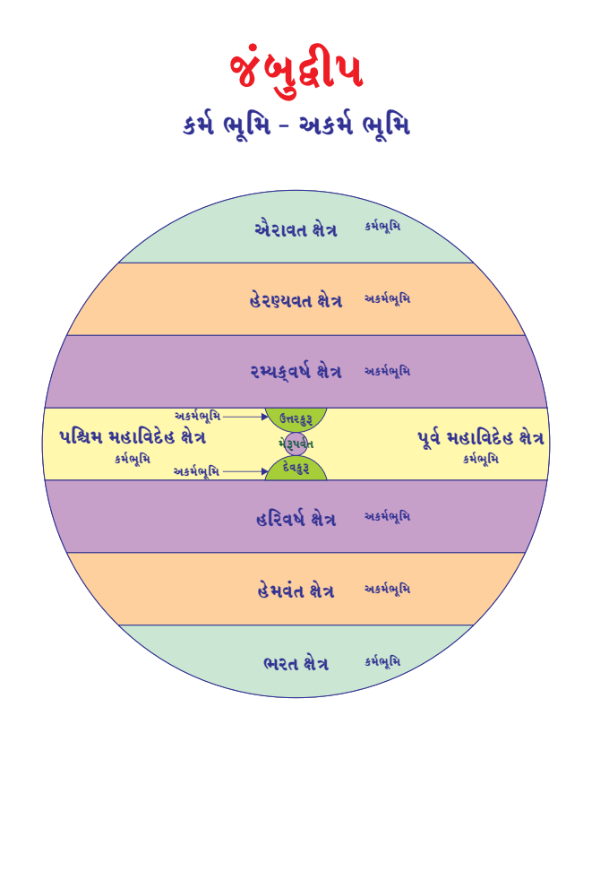
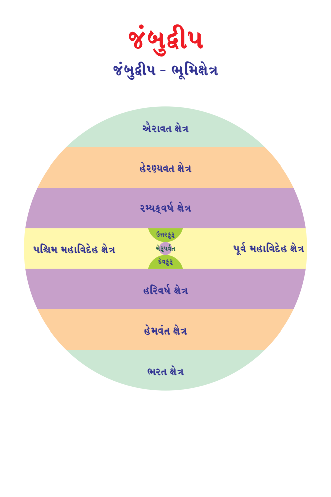

Page 386
Page 386This book Unicode and EPUB Converted by Parth Shah (myself) free of charge as Gyaanseva. You can contact on caparthdshah@gmail.com for further details. You may quote reference "Jain Website"
મનુષ્ય જીવ - 211 : કુલકર - 3:
યુગલિક કુલના અધિપતિને કુલકર કહેવાય છે. તેઓ લોકના વ્યવસ્થાપક હોય છે. તેઓ યુગલિક કુલોની રચના કરે છે તેથી કુલકર કહેવાય છે. તે સમયે કાળના પ્રભાવે કલ્પવૃક્ષની સંખ્યા અને ફળ આપવાની શક્તિ ઘટવા લાગે છે. યુગલિક મનુષ્યોમાં લોભ અને મમત્વ (મારાપણું) ભાવની વૃદ્ધિ થવા લાગે છે. તેઓ કલ્પવૃક્ષ ઉપર માલિકી ભાવ જમાવવા પ્રયત્નશીલ બની જાય છે. તેઓ વચ્ચે નીતિનાશક વિવાદ અને કલહ (કંકાશ, ઝઘડા) શરુ થઇ જાય છે. તે સમયે ન્યાયિક પ્રક્રિયામાં કુલકર કલ્પવૃક્ષોનું વિભાજન કરી આપે છે. ત્રણ દંડનીતિના પ્રયોગથી યુગલિક મનુષ્યોના વિવાદ અને કલહને દૂર કરી શાંતિ સ્થાપેલ છે.
ઋષભદેવ (શ્રી આદિનાથ ભગવાન) રાજ્ય અભિષેક પહેલાં તેઓ કુલકર અવસ્થામાં રહ્યા હતાં તેથી તેમને 15માં કુલકર કહ્યા છે. જૈન સંપ્રદાય અને ગચ્છ સમાચારી મુજબ કુલકરની સંખ્યામાં કદાચ ભેદ આવી શકે. દરેકે પોતપોતાની ગુરુપરંપરાને શ્રદ્ધાપૂર્વક માન્ય કરવું.
યુગલિક મનુષ્યોને અકર્મભૂમિ મનુષ્યો કહેવાય છે. કેમકે, તેમને અસિ- મસિ-કૃષિનો વ્યવહાર નથી. તેથી તે સંદર્ભે કર્મ થવા શક્ય નથી. સંપૂર્ણ જીવન 10 પ્રકારના કલ્પવૃક્ષના આધારે ઇચ્છાપૂર્તિ પૂર્વક વીતે છે. દરેક યુગલિક ભદ્રિક અને વિનયી જીવ હોય છે. છલ-કપટ રહિત હોય છે. ક્રોધ, માન, માયા અને લોભ રહિત જીવન વિતાવે છે.
113
Page 373
જંબુદ્વીપ કર્મ ભૂમિ - અકર્મ ભૂમિ

Page 374
જૈન વિજ્ઞાન
મનુષ્ય જીવ - 212 : યુગલિક મનુષ્ય ક્ષેત્ર - 1:
અકર્મભૂમિજઃ
જ્યાં અસિ (અસ્ત્ર), મસિ (લેખન) અને કૃષિ (ખેતી)ના વ્યાપાર વિના પ્રાકૃતિક પદાર્થોથી અને કલ્પવૃક્ષોથી જીવન વ્યવહાર ચાલે તેને અકર્મભૂમિ ક્ષેત્ર કહે છે. તે ક્ષેત્રમાં જન્મેલા મનુષ્યોને અકર્મભૂમિ કહેવાય છે. અકર્મભૂમિમાં સદાય યુગલિક મનુષ્યો જ જન્મે છે.
અકર્મભૂમિ ક્ષેત્ર કુલ 30 છે. જંબુદ્વીપમાં 1-હેમવત ક્ષેત્ર, 1-હેરણ્યવત ક્ષેત્ર, 1-હરિવર્ષ ક્ષેત્ર, 1-રમ્યકવર્ષ ક્ષેત્ર, 1-દેવકુરુ ક્ષેત્ર અને 1-ઉત્તરકુરુ ક્ષેત્ર આ 6 ક્ષેત્ર અકર્મભૂમિ છે. અહીં સદાય યુગલિક મનુષ્યોના જન્મ થાય છે.
ઘાતકીખંડમાં 2-હેમવત ક્ષેત્ર, 2-હેરણ્યવત ક્ષેત્ર, 2-હરિવર્ષ ક્ષેત્ર, 2- રમ્યકવર્ષ ક્ષેત્ર, 2-દેવકુરુ ક્ષેત્ર અને 2-ઉત્તરકુરુ ક્ષેત્ર આ 12 ક્ષેત્ર અકર્મભૂમિ છે. અહીં સદાય યુગલિક મનુષ્યોના જન્મ થાય છે.
અર્ધ-પુષ્કરદ્વીપમાં 2-હેમવત ક્ષેત્ર, 2-હેરણ્યવત ક્ષેત્ર, 2-હરિવર્ષ ક્ષેત્ર, 2-રમ્યકવર્ષ ક્ષેત્ર, 2-દેવકુરુ ક્ષેત્ર અને 2-ઉત્તરકુરુ ક્ષેત્ર આ 12 ક્ષેત્ર અકર્મભૂમિ છે. અહીં સદાય યુગલિક મનુષ્યોના જન્મ થાય છે.
તિરછાલોકમાં જંબુદ્વીપના 6 ક્ષેત્ર + ઘાતકીખંડના 12 ક્ષેત્ર + અડધા પુષ્કરદ્વીપના 12 ક્ષેત્ર મળીને કુલ 30 અકર્મભૂમિ થાય છે. ત્યાં સદાય યુગલિક મનુષ્યોનો જ જન્મ થાય છે. જે આપને ચિત્ર પરથી સમજાઇ જશે.
115
Page 375
જૈનમ્ જયતિ શાસનમ્
મનુષ્ય જીવ - 213 : યુગલિક મનુષ્ય ક્ષેત્ર - 2:
અંતરદ્વીપજઃ
લવણસમુદ્રમાં યુગલિક મનુષ્યોના જે 56 દ્વીપ (ટાપુ) છે તેને અંતરદ્વીપ કહે છે, તેમાં જન્મેલ મનુષ્યોને અંતરદ્વીપજ કહેવાય છે. (આગળ વધતાં દરેક ભૂમિ ક્ષેત્રના વર્ણનમાં સંપૂર્ણ ક્ષેત્ર, વિસ્તારનું ભૂગોળ રેખાચિત્ર સાથે સમજાવવામાં આવશે. અત્યારે યુગલિક મનુષ્યોના ભૂમિ ક્ષેત્ર તરીકે માત્ર જાણીશું)
ઉત્તરકુરુ ક્ષેત્રઃ
ઉત્તરકુરુ ક્ષેત્ર યુગલિક ક્ષેત્ર છે. તે ક્ષેત્રમાં સદાય સુષમસુષમા કાળ જેવા ભાવ સદાય વર્તાય છે. સમગ્ર વાતાવરણ અને વિવિધ પર્યાયો વગેરે ભરતક્ષેત્રમાં અવસર્પિણી કાળમાં પ્રથમ આરા અને ઉત્સર્પિણી કાળમાં છઠ્ઠો આરા જેવું જ હોય છે. યુગલિક મનુષ્યોનું દેહમાન, પ્રમાણ, આયુષ્ય, સંઘયણ, સંસ્થાન, ભૂમિક્ષેત્ર, કલ્પવૃક્ષની ઇચ્છાપૂર્તિ વગરે સમાન હોય છે.
દેવકુરુ ક્ષેત્રઃ
દેવકુરુ ક્ષેત્ર યુગલિક ક્ષેત્ર છે. તે ક્ષેત્રમાં સદાય સુષમસુષમા કાળ જેવા ભાવ સદાય વર્તાય છે. સમગ્ર વાતાવરણ અને વિવિધ પર્યાયો વગેરે ભરતક્ષેત્રમાં અવસર્પિણી કાળમાં પ્રથમ આરા અને ઉત્સર્પિણી કાળમાં છઠ્ઠો આરા જેવું જ હોય છે. યુગલિક મનુષ્યોનું દેહમાન, પ્રમાણ, આયુષ્ય, સંઘયણ, સંસ્થાન, ભૂમિક્ષેત્ર, કલ્પવૃક્ષની ઇચ્છાપૂર્તિ વગરે સમાન હોય છે.
116
Page 376
જૈન વિજ્ઞાન
મનુષ્ય જીવ - 214 : યુગલિક મનુષ્ય ક્ષેત્ર - 3:
હરિવર્ષ ક્ષેત્ર :
હરિવર્ષ ક્ષેત્ર યુગલિક ક્ષેત્ર છે. તે ક્ષેત્રમાં સદાય સુષમ કાળ જેવા ભાવ સદાય વર્તાય છે. સમગ્ર વાતાવરણ અને વિવિધ પર્યાયો વગેરે ભરતક્ષેત્રમાં અવસર્પિણી કાળમાં બીજા આરા અને ઉત્સર્પિણી કાળમાં પાંચમા આરા જેવું જ હોય છે. યુગલિક મનુષ્યોનું દેહમાન, પ્રમાણ, આયુષ્ય, સંઘયણ, સંસ્થાન, ભૂમિક્ષેત્ર, કલ્પવૃક્ષની ઇચ્છાપૂર્તિ વગરે સમાન હોય છે.
રમ્યકવર્ષ ક્ષેત્રઃ
રમ્યકવર્ષ ક્ષેત્ર યુગલિક ક્ષેત્ર છે. તે ક્ષેત્રમાં સદાય સુષમ કાળ જેવા ભાવ સદાય વર્તાય છે. સમગ્ર વાતાવરણ અને વિવિધ પર્યાયો વગેરે ભરતક્ષેત્રમાં અવસર્પિણી કાળમાં બીજા આરા અને ઉત્સર્પિણી કાળમાં પાંચમા આરા જેવું જ હોય છે. યુગલિક મનુષ્યોનું દેહમાન, પ્રમાણ, આયુષ્ય, સંઘયણ, સંસ્થાન, ભૂમિક્ષેત્ર, કલ્પવૃક્ષની ઇચ્છાપૂર્તિ વગરે સમાન હોય છે.
હેમવત ક્ષેત્ર :
હેમવત ક્ષેત્ર યુગલિક ક્ષેત્ર છે. તે ક્ષેત્રમાં સદાય સુષમદુઃષમા કાળ જેવા ભાવ સદાય વર્તાય છે. સમગ્ર વાતાવરણ અને વિવિધ પર્યાયો વગેરે ભરતક્ષેત્રમાં અવસર્પિણી કાળમાં ત્રીજા આરા અને ઉત્સર્પિણી કાળમાં ચોથા આરા જેવું જ હોય છે. યુગલિક મનુષ્યોનું દેહમાન, પ્રમાણ, આયુષ્ય, સંઘયણ, સંસ્થાન, ભૂમિક્ષેત્ર, કલ્પવૃક્ષની ઇચ્છાપૂર્તિ વગરે સમાન હોય છે.
117
Page 377
જૈનમ્ જયતિ શાસનમ્
હેરણ્યવત ક્ષેત્રઃ
હેરણ્યવત ક્ષેત્ર યુગલિક ક્ષેત્ર છે. તે ક્ષેત્રમાં સદાય સુષમદુઃષમા કાળ જેવા ભાવ સદાય વર્તાય છે. સમગ્ર વાતાવરણ અને વિવિધ પર્યાયો વગેરે ભરતક્ષેત્રમાં અવસર્પિણી કાળમાં ત્રીજા આરા અને ઉત્સર્પિણી કાળમાં ચોથા આરા જેવું જ હોય છે. યુગલિક મનુષ્યોનું દેહમાન, પ્રમાણ, આયુષ્ય, સંઘયણ, સંસ્થાન, ભૂમિક્ષેત્ર, કલ્પવૃક્ષની ઇચ્છાપૂર્તિ વગરે સમાન હોય છે.
118
Page 378
જંબુદ્વીપ જંબુદ્વીપ - ભૂમિક્ષેત્ર

Page 379
જૈનમ્ જયતિ શાસનમ્
મનુષ્ય જીવ - 215 : યુગલિક મનુષ્ય વિશેષતા - 1:
આયુષ્ય બંધઃ
યુગલિક મનુષ્યો પોતાના આયુષ્યના 6 મહિના (180 દિવસ) બાકી રહે
ત્યારે જ પરભવ (આગામી ભવ)નો આયુષ્યનો બંધ કરે છે.
અનુશાસન :
યુગલિક મનુષ્યો સ્વયં અનુશાસિત હોય છે. તેઓ શિસ્તબદ્ધ હોય છે. તેઓને રાજ્ય વ્યવસ્થાની કોઇ જ આવશ્યકતા હોતી નથી. તેઓ દંડથી રહિત હોય છે. અપવાદ સ્વરુપે 5-ભરતક્ષેત્રમાં અને 5-ઐરાવતક્ષેત્રમાં અવસર્પિણી કાળના ત્રીજા આરાના અંતે છેલ્લે 1 પલ્યોપમના આઠમાં ભાગમાં સમયમાં જ યુગલિક મનુષ્યો માટે દંડનીતિ શરુ થાય છે. કેમકે, સમયના પ્રભાવે હવે અકર્મભૂમિ થી કર્મભૂમિની શરુઆત થાય છે. આ જ પ્રમાણે ઉત્સર્પિણી કાળમાં ચોથા આરાની શરુઆતના પ્રથમ પલ્યોપમની પ્રથમ આઠમાં ભાગ સુધી દંડનીતિ અને પછી યુગલિક કાળ શરુ થતાં કર્મભૂમિ હવે અકર્મભૂમિ બને છે.
કુલકરઃ
જંબુદ્વીપમાં ભરતક્ષેત્રમાં ઉત્સર્પિણી કાળમાં 7 કુલકરોના જન્મ થયા હતાં. 1) મિત્રદામ કુલકર, 2) સુદામ કુલકર, 3) સુપાર્શ્વ કુલકર, 4) સ્વયંપ્રભ કુલકર, 5) વિમલઘોષ કુલકર, 6) સુઘોષ કુલકર અને 7) મહાઘોષા કુલકર.
જંબુદ્વીપમાં ભરતક્ષેત્રમાં અતીતકાળ (ભૂતકાળ)માં 10 કુલકર થયા હતાં. 1) શતંજલ કુલકર, 2) શતાયુ કુલકર, 3) અજિતસેન કુલકર, 4) અનંતસેન કુલકર, 5) કાર્યસેન કુલકર, 6) ભીમસેન કુલકર, 7) મહાભીમસેન કુલકર, 8) દ્રઢરથ કુલકર, 9) દશરથ કુલકર અને 10) શતરથ કુલકર
120
Page 380
જૈન વિજ્ઞાન
મનુષ્ય જીવ - 216 : યુગલિક મનુષ્ય વિશેષતા - 2:
આહારઃ
એકમાત્ર યુગલિક મનુષ્યોની આહાર મર્યાદા નિર્ધારિત હોય છે. 5- ભરતક્ષેત્રમાં અને 5-ઐરાવતક્ષેત્રમાં અવસર્પિણી કાળમાં પ્રથમ આરામાં ત્રણ દિવસે, બીજા આરામાં બે દિવસે અને ત્રીજા આરામાં એક દિવસે આહારની ઇચ્છા થાય છે. તે જ પ્રમાણે ઉત્સર્પિણી કાળમાં ચોથા આરામાં એક દિવસે, પાંચમાં આરામાં બે દિવસે અને છઠ્ઠા આરામાં ત્રણ દિવસે આહારની ઇચ્છા થાય છે.
વેદઃ
વેદ ત્રણ પ્રકારના હોય છે. 1) પુરુષવેદ, 2) સ્ત્રીવેદ અને 3) નપુસંકવેદ.
યુગલિક મનુષ્યોમાં નપુસંકવેદ નથી.
અતૃપ્ત અવસ્થાઃ
યુગલિક મનુષ્યોનું ઉત્કૃષ્ટ આયુષ્ય 3 પલ્યોપમ હોય છે. તેમાં પણ તેઓ સંપૂર્ણ યૌવન અવસ્થામાં રહે છે. તેમને રોગ, વૃદ્ધત્વ, વ્યાપાર, ખેતી વગેરેના કોઇ જ પ્રકારના વિઘ્નો જ નથી. અસંખ્ય વર્ષો સુધી વિષય ભોગોનું સેવન કરવા છતાં પણ તે અતૃપ્ત અવસ્થામાં જ મૃત્યુને પ્રાપ્ત થાય છે.
ગતિઃ
ગતિ એટલે મરણ પછીનું જીવનું ભવ ભ્રમણ. યુગલિક મનુષ્યનું આયુષ્ય પૂર્ણ થયા પછી તેમની દેવગતિ અવશ્ય થાય છે. પરંતું, યુગલિક મનુષ્યનું વર્તમાન આયુષ્યથી વધુ આયુષ્યના દેવ તો ક્યારેય ન જ બને!
યુગલિક મનુષ્યની વર્તમાન આયુષ્ય અનુસાર દેવગતિમાં 25 પ્રકારે જન્મ થઇ શકે છે. ભવનપતિ દેવલોકમાં 10 પ્રકારે, વ્યંતર દેવલોકમાં 8 પ્રકારે, જ્યોતિષ્ક દેવલોકમાં 5 પ્રકારે (ચંદ્ર, સૂર્ય, ગ્રહ, નક્ષત્ર અને તારા) અને વૈમાનિક દેવલોકમાં ર પ્રકારે (સૌધર્મ દેવલોક અને ઇશાન દેવલોક) થાય છે. (નોંધ : દેવલોકના વર્ણનમાં દેવ વિશે વિસ્તાર પૂર્વક આગળ જતાં સમજીશું.)
121
Page 381
મનુષ્ય જીવ - 217 : યુગલિક મનુષ્ય વિશેષતા - 3:
આગતિઃ
આગતિ એટલે પૂર્વ ભવનું આયુષ્ય પૂર્ણ કરી યુગલિક મનુષ્યમાં જન્મ લેવો. 30 અકર્મભૂમિના યુગલિક મનુષ્યોમાં આગતિ 20 પ્રકારે હોય છે. એટલે કે, 20 પ્રકારના જીવો યુગલિક મનુષ્ય તરીકે જન્મ લે છે. 15 કર્મભૂમિ (5-ભરતક્ષેત્ર, 5- ઐરાવતક્ષેત્ર અને 5-મહાવિદેહક્ષેત્ર)ના પર્યાપ્ત મનુષ્યો અને 5 પ્રકારના સંજ્ઞી (જેમને મન હોય તેવા) તિર્યંચ (સ્થલચર, જલચર, ખેચર, ભૂજપરિસર્પ અને ઉરપરિસર્પ) પર્યાપ્ત જીવ.
પર્યાપ્ત એટલે જે જીવ જન્મ લેવા પોતાના શરીરનું સંપૂર્ણ બંધારણ (રચના) પૂર્ણ કરી લે તેને પર્યાપ્ત જીવ કહેવાય. સ્થલચર - ભૂમિ ઉપર ચાલી શકે, જલચર - પાણીમાં તરી શકે, ખેચર - આકાશમાં ઊડી શકે, ભૂજપરિસર્પ - હાથ દ્વારા ભૂમિ ઉપર સરકનારા જીવો, ઉરપરિસર્પ - છાતીના ટેકાથી સરકનારા જીવો.
56 અંતરદ્વીપના યુગલિક મનુષ્યોમાં 25 પ્રકારના જીવો જન્મ લે છે. 15 કર્મભૂમિના પર્યાપ્ત મનુષ્યો, 5-સંજ્ઞી તિર્યંચ પર્યાપ્ત જીવો અને 5-અસંજ્ઞી (જેમને મન ન હોય) તિર્યંચ પર્યાપ્ત જીવોના પ્રકાર હોય છે.
વૈક્રિયલબ્ધિ :
યુગલિક મનુષ્યોને વૈક્રિયલબ્ધિ હોતી નથી. જ્યારે કર્મભૂમિના ઋદ્ધિવંત મનુષ્યો (ચક્રવર્તી, વાસુદેવ, 14 પૂર્વધારી વગેરે) વૈક્રિયલબ્ધિધારી મનુષ્યો દેવોની જેમ શરીરને સુક્ષ્મ-નાનું-મોટું, હળવું-ભારે કરી શકે.
122
Page 382
જૈન વિજ્ઞાન
મનુષ્ય જીવ - 218 : યુગલિક મનુષ્ય વિશેષતા - 4:
જ્ઞાન-દર્શનઃ
30 અકર્મભૂમિના યુગલિક મનુષ્યોને 2 જ્ઞાન હોય છે, 2 અજ્ઞાન હોય છે. 2 દર્શન હોય છે. તેમને અવધિજ્ઞાન, મનઃપર્યવજ્ઞાન અને કેવળજ્ઞાન નથી થતું. (વિશેષ નોંધઃ માત્ર 5-ભરતક્ષેત્રમાં અને 5-ઐરાવતક્ષેત્રમાં કર્મભૂમિમાં અવસર્પિણી કાળમાં ત્રીજા આરાના અંતે છેલ્લે 1 પલ્યોપમના 8માં ભાગના સમયમાં જન્મનારાં કે વિચરતાં યુગલિક મનુષ્યોને જ થાય છે. કેમકે તે સમય અકર્મથી કર્મભૂમિમાં પરિવર્તન થાય છે. 5-મહાવિદેહ ક્ષેત્રમાં યુગલિક મનુષ્યોના જન્મ થતાં જ નથી.)
56 અંતરદ્વીપના યુગલિક મનુષ્યોને 2-અજ્ઞાન હોય છે. 2-દર્શન હોય છે. તેઓ મિથ્યાજ્ઞાની હોવાથી તેમને જ્ઞાન (શ્રુતજ્ઞાન, મતિજ્ઞાન, અવધિજ્ઞાન, મનઃપર્યવજ્ઞાન અને કેવળજ્ઞાન) નથી.
અગાઉ જૈન વિજ્ઞાન - કાળ પરિવર્તનના વિવિધ લેખોમાં કુલ 6 આરાનો પ્રભાવ વિસ્તારમાં જણાવેલ છે. તદુપરાંત જૈન વિજ્ઞાન - યુગલિક મનુષ્યના લેખમાં પણ વિસ્તારમાં જણાવવામાં આવેલ છે. ફરી એકવાર બંને લેખોનું પુનરાવર્તન કરશો જેથી સંપૂર્ણ યુગલિક મનુષ્યોને સમજવામાં સરળતા રહેશે.
મનુષ્ય જીવમાં તીર્થંકર પરમાત્મા, ચક્રવર્તી, વાસુદેવ - બળદેવ - પ્રતિવાસુદેવ અને યુગલિક મનુષ્યનો લેખ પૂર્ણ થયો. પરંતું, મનુષ્ય જીવનો લેખ ખૂબજ વિસ્તારમાં છે તેથી પાંચ ગતિઓને સમજવી આવશ્યક છે. નરકગતિ, તિર્યંચગતિ, મનુષ્યગતિ, દેવગતિ અને સિદ્ધગતિ. કેમકે તેનો સીધો સંબંધ મનુષ્ય જીવ સાથે છે.
123
Page 383
દેવલોક - 1:
સમગ્ર 14 - રાજલોક પાંચ પ્રકારના જીવોથી પરિપૂર્ણ છે. નરક જીવ, તિર્યંચ જીવ, મનુષ્ય જીવ, દેવ જીવ અને સિદ્ધ જીવ. સમગ્ર લોકની નાભિ (કેન્દ્ર) મેરુપર્વત છે. મેરુપર્વતને ધ્યાનમાં લઇને નીચે અધોલોક, મધ્યમાં તિરછાલોક, ઉપર ઉર્ધ્વલોક અને 14 રાજલોકના અંતે સિદ્ધલોક છે. 14 રાજલોકના બહારનો ભાગ અલોક છે. અલોકમાં કોઇપણ પ્રકારના જીવ નથી.
જીવ શુભ કર્મો કરી પુણ્ય ઉપાર્જન કરે છે. તે પુણ્યથી માત્ર સિમિત પુણ્ય નથી બંધાતું! પરંતું, એક શુભ કર્મનું અનંતગણું પુણ્ય બંધાય છે. તે પ્રમાણે મનુષ્ય જીવ પ્રતિ ક્ષણે અને સમગ્ર જીવન દરમ્યાન અસંખ્ય પુણ્ય કરતો રહે છે, જે મનુષ્ય લોકમાં ભોગવાય તેમ નથી. મનુષ્ય જીવને સુખ ભોગવવા વધુમાં વધુ આયુષ્ય 3 પલ્યોપમનું હોય છે, તે પણ યુગલિક મનુષ્યોને જ! . તેનાથી વધુ આયુષ્ય મનુષ્યોને હોતું નથી. તો પછી પુણ્યના પ્રતાપે વધુ સુખ કેમ અને ક્યાં ભોગવી શકાય?
વિશેષપણે મર્યાદિત પણ અદ્વિતીય સુખ ભોગવવાનો એક માત્ર વિકલ્પ દેવગતિ નું જ હોય છે. જ્યાં દેવી-દેવના જીવનું ઓછામાં ઓછું આયુષ્ય 10,000 વર્ષ અને વધુમાં વધુ આયુષ્ય 33 સાગરોપમનું હોય છે. ત્યાં મર્યાદિત, પણ લાંબા સમયનો આનંદ અને અતિસુખ હોય છે.
દેવગતિમાં મુખ્ય ચાર પ્રકારના દેવો હોય છે. ભવનપતિ દેવો, વ્યંતર દેવો,
જ્યોતિષ્ક દેવો અને વૈમાનિક દેવો.
124
Page 384
જૈન વિજ્ઞાન
દેવલોક - 2:
ભવનપતિ દેવલોક, જે દેવનું નિવાસસ્થાન ભવન (મહેલ)માં હોય એટલે કે, જે દેવો ભવનમાં રહે છે તેવા દેવોને ભવનપતિ દેવો કહે છે. ભવનપતિ દેવોનું સ્થાન મેરુપર્વતની નીચે એટલે કે રત્નપ્રભા પૃથ્વીમાં છે.
વ્યંતર દેવલોક, વ્યંતર દેવલોકમાં પણ બે વિભાગ થાય છે. વ્યંતર દેવલોક અને વાણવ્યંતર દેવલોક. વ્યંતર દેવલોક રત્નપ્રભા પૃથ્વીમાં ભવનપતિ દેવલોકની ઉપર નગરમાં નિવાસ કરે છે. વાણવ્યંતર દેવ એટલે વનમાં વિચરનારા દેવ હોય છે. તેઓ રત્નપ્રભા પૃથ્વીમાં વ્યંતર દેવલોકની ઉપર અને તિરછાલોકમાં વન, ઉપવન, વૃક્ષો વગેરેમાં નિવાસ કરે છે.
જ્યોતિષ્ક દેવલોક. જે દેવોના નિવાસસ્થાન જ્યોતિ (પ્રકાશ) આપનાર ચંદ્ર, સૂર્ય, ગ્રહ, નક્ષત્ર અને તારાઓ માં હોય છે. એટલે કે, જ્યોતિષ્ક દેવોનો વાસ તેમાં હોય છે. તેથી જ્યોતિષ્ક દેવલોક કહેવાય છે. તેઓનું સ્થાન સુદર્શન મેરુપર્વતને ધ્યાનમાં લઇ સમભૂતલા ભૂમિથી 790 યોજન ઊંચાઇ ઉપર અને 900 યોજન ઊંચાઇ સુધીમાં સમગ્ર જ્યોતિષ્ક દેવલોક સમાવેશ થાય છે.
વૈમાનિક દેવલોક એટલે જે દેવોના નિવાસ સ્થાન દેવવિમાનમાં હોય છે તેમને વૈમાનિક દેવલોક કહેવાય છે. વૈમાનિક દેવલોકમાં પણ ત્રણ વિભાગ થાય છે. 12 દેવલોક, 9 ગ્રૈવયક અને 5 અનુત્તર વિમાનમાં વસનારા દેવોને વૈમાનિક દેવો કહેવાય છે. અહીં આપને માત્ર આછેરી સમજણ આપેલ છે.
125
Page 385
14 રાજલોક લોક-અલોક રેખાચિત્ર
Page 386
જૈન વિજ્ઞાન
દેવલોક - 3 : દેવલોકની રચના-1:
દેવલોકની રચનામાં ભવનપતિ દેવલોકના દેવો ભવનમાં રહે છે. વ્યંતર દેવલોકના દેવો નગરમાં રહે છે. જ્યોતિષ્ક દેવલોકના દેવો સૂર્ય, ચંદ્ર, ગ્રહ, નક્ષત્ર અને તારાઓ માં રહે છે. વૈમાનિક દેવલોકના દેવો દેવવિમાનમાં રહે છે. દરેક દેવલોકના દેવોનું રહેવાની રચના સમાન હોય છે. દા. ત. મનુષ્ય જીવોમાં રહેવાની સમાનતા સરખી હોય. દરેક મનુષ્યના ઘરમાં ઓસરી, રસોઇ રુમ, ભોજન કક્ષ, શયન કક્ષ, કોઠાર, સ્ટોરરુમ, અતિથિરુમ, પટાંગણ, અભ્યાસરુમ વગેરે ઘણી જ વ્યવસ્થાઓ હોય. જેવી જેનું આર્થિક સામર્થ્ય! કોઇક ઝુંપડામાં, બંગલામાં, બિલ્ડીંગમાં, મહેલમાં જેવી જેની રિદ્ધિ-સિદ્ધિ!
દરેક દેવલોકની રચના અને વ્યવસ્થાઓમાં ઘણુંબધું સમાનતા જ હોય છે. તફાવત માત્ર ભવન, નગર, દેવવિમાન અને તેમના માપ, ક્ષેત્ર વિસ્તાર વગેરે... દેવલોકની રચનાના એક જ લેખમાં ચારેય પ્રકારની દેવલોકની રચનાનો સમાવેશ થાય છે. તેથી વ્યંતર, વાણવ્યંતર, જ્યોતિષ્ક અને વૈમાનિક દેવલોકના લેખમાં દેવલોકની રચનાના વિશે માહિતીનું પુનરાવર્તન નહીં થાય.
કોટઃ
કોટ એટલે કિલ્લો. વિમાનની ફરતો ચારે બાજુ એક મોટો કિલ્લો હોય છે. કિલ્લો 300 યોજન ઊંચો હોય છે. મૂળમાં 100 યોજન, મધ્યમાં 50 યોજન અને ઉપર 25 યોજન પહોળો હોય છે. કિલ્લો રત્નમય, સ્ફટિક જેવો નિર્મળ અને મનોહર હોય છે.
કોટના કાંગરા કાળા, નીલા, લાલ, પીળા અને સફેદ રંગથી સુશોભિત હોય છે. પ્રત્યેક કાંગરા 1 યોજન લાંબા, અડધો યોજન પહોળા અને દેશોન 1 યોજન ઊંચા હોય છે. પ્રત્યેક કાંગરાઓ રત્નોથી બનેલા નિર્મળ અને રમણીય હોય છે.
127
Page 387
જૈનમ્ જયતિ શાસનમ્
દેવલોક - 4 : દેવલોકની રચના-2:
દરવાજાઃ
વિમાન/ભવનની પૂર્વ દિશા, દક્ષિણ દિશા, પશ્ચિમ દિશા અને ઉત્તર દિશામાં દરવાજાઓ છે. પ્રત્યેક દિશાએ 1,000 દરવાજા હોવાથી ચારેય દિશાઓ મળી કુલ 4,000 દરવાજાઓ હોય છે.
દરવાજા સફેદ રંગના હોય છે. તેના શિખરો સોનાના હોય છે. શિખરો વરૂ, બળદ, ઘોડો, મનુષ્ય, મગર, પક્ષી, સાપ, કિન્નર, કસ્તુરીમૃગ, અષ્ટાપદ, ચમરી ગાય, હાથી, વનલતા, પદ્મલતા વગેરે ચિત્રોથી ચિત્રાયેલ હોય છે.
સ્તંભગત (દરવાજો જેના આધારે હોય છે તે) વજ્રરત્નમયી વેદિકાઓથી મનોહર દેખાય છે. યંત્ર સંચાલિત સમશ્રેણીમાં સ્થિત વિદ્યાધર યુગલોના પૂતળાઓ ફરતા દેખાય છે. (પૂતળાઓ સામાન્ય કક્ષાના સ્ત્રી - પુરુષ નહીં! પરંતું, વૈતાઢ્ય પર્વતની 10 યોજન ઉપર વિદ્યાધર સ્ત્રી - પુરુષો રહે છે, તેવા દેખાવના હોય છે.)
રત્નોના હજારો કિરણોથી તે સૂર્યની જેમ ઝગારા મારે છે. હજારો ચિત્રોથી શોભાયમાન છે. દેદીપ્યમાન અને આંખે વળગે તેવા હોય છે. અનુકૂળ સ્પર્શ અને મનોહર રુપથી સુશોભિત હોય છે.
દ્વારનો અંદરનો આધાર વજ્રમય (વજ્ર એટલે હીરો), પાયા રિષ્ટરત્નના, થાંભલીઓ વૈડુર્યરત્નની હોય છે. ભૂમિનું તળીયું પંચરંગી ઉત્તમ મણિઓથી જડેલા હોય છે. તેના ઉંબરા હંસગર્ભરત્નના, ઇન્દ્ર ખીલ્લો ગોમેદરત્નનો, બારસાખ લોહિતાક્ષરત્નનો, દરવાજાના ત્રાંસા પાટિયા જ્યોતિરસરત્નોના, ખીલીઓ લોહિતાક્ષરત્નોની, તેના સાંધાઓમાં વજ્રરત્ન ભરવામાં આવ્યા હોય છે.
128
Page 388
જૈન વિજ્ઞાન
દેવલોક - 5 : દેવલોકની રચના-3:
દરવાજાઃ
ખીલીઓ ઉપરના ટોપકા વિવિધ મણિમય હોય છે. આગળીયો અને તેનું અટકણ વજ્રનું છે. ઉલાળાનું ટેકણ ચાંદીનું છે. દરવાજાના ઉત્તર પડખાં અંકરત્નના છે. તેના કમાડ તિરાડ ન રહે, ચપોચપ બંધ થાય તેવા મજબૂત હોય છે. દરવાજાની બંને બાજુની ભીંતમાં 168-168 ગુપ્ત ઝરુખાઓ છે. (આ ગુપ્ત ઝરુખામાંથી બહાર જોઇ શકાય, પરંતું, બહારનો વ્યક્તિ અંદર જોઇ ન શકે) 168-168 બેઠકો છે.
દરવાજા ઉપર વિવિધ રત્નો અને મણિઓથી બનેલ સાપના આકારવાળી રમતી પૂતળીઓ છે. દ્વારમાં જાળીયુક્ત ઝરુખાઓ મણિના બનેલા છે. દરવાજાના ઉપરના વાંસા (વળા) મણિમય છે. વાંસની વચ્ચે પ્રતિવાંસા લોહિતાક્ષરત્નના છે, તેની ભૂમિ ચાંદીની છે. દરવાજાના પડખાં અને પડખાંઓની બાજુઓ અંકરત્નની છે. દરવાજા ઉપરના ખપાટો (વળા), વળાની બંને બાજુએ ત્રાંસા મૂકેલા વળા અને નળિયા જ્યોતિરસરત્નના બનેલા છે. પટ્ટીઓ ચાંદીની, નળિયાના ઢાંકણા સોનાના, છત ઉપર ઝીણા ઘાસનું મજબૂત પથરામણું વજ્રમય છે. તેના ઉપરના સ્તૂપ (દેરી) સોનાની છે. તેના શિખરો અંકરત્નોના અને સ્તૂપિકાઓ તપનીય સુવર્ણમય છે.
દરવાજાઓ ચાંદીના ઢગલા જેવા સફેદ અને ચકચકિત છે. દરવાજા ઉપર તિલક, અડધા ચંદ્ર કોતરેલા હોય છે. તેના ઉપર મણિની માળાઓ લટકાવેલી હોય છે. દરવાજા અંદર-બહાર લીસા હોય છે. તેના ઉપર સોનેરી રેતી ચોંટાડેલી છે. દરવાજાઓ સુંદર, સુખદ સ્પર્શવાળા, શોભાયુક્ત, પ્રસન્નતાદાયક, દર્શનીય અને અત્યંત રમણીય હોય છે.
129
Page 389
જૈનમ્ જયતિ શાસનમ્
જૈન વિજ્ઞાન ભાગ-3માં લેખ ક્રમાંક 201 થી 300ના તમામ લેખોમાં અક્ષર-શબ્દ ત્રૂટિ-દોષ રહી ગયો હોય, લેખમાં કોઇપણ પ્રકારની ક્ષતિ-ભુલ રહી ગયેલ હોય તે બદ્દલ તેમજ જિનાજ્ઞા વિરાધના થઇ હોય તો ત્રિવિધે ત્રિવિધે કરી મિચ્છામિ દુક્કડમ્!
લિ. જીજ્ઞેશ ચંદ્રકાન્ત હંસરાજ લોડાયા (વારાપધર-ડોંબિવલી)
130
Page 390
જે દેવનિર્મિત સમવસરણે બેસી દેતા દેશના, વાણી અમીય સમાણી સુણતા, તૃપ્તિ કદીએ થાય ના, ચોત્રીશ અતિશય શોભતા, પાંત્રીસ ગુણ વાણીતણા, અરિહંતના શુભ ચરણમાં, કરું ભાવથી હું વંદના... જે રજત સોનાને અનુપમ, રત્નના ત્રણ ગઢ મહીં, સુવર્ણના નવપદ્મમાં, પદકમળને સ્થાપન કરી; ચારે દિશા મુખ ચાર ચાર, સિંહાસન જે શોભતા, અરિહંતના શુભ ચરણમાં, કરું ભાવથી હું વંદના...
।। ચરમ તીર્થાધિપતિ શ્રી મહાવીર સ્વામીને નમઃ ।। શ્રી ।। ૐ ર્હ્રીં ણમો નાણસ્સ ।।
ગૌતમ સ્વામીને નમઃ ।।
।। અનંત લબ્ધિનિધાન
જૈન વિજ્ઞાન
જૈન વિજ્ઞાન
ભાગ-4
જૈન વિજ્ઞાન
પ્રકાશકની કલમે...
જય જિનેન્દ્ર! અત્યંત હર્ષની લાગણીઓ સાથે જૈનમ્ જયતિ શાસનમ્ વોટસએપ ગ્રુપમાં દૈનિક ધોરણે પ્રકાશિત થયેલા જૈન વિજ્ઞાન લેખ નં. 301 થી 400 સુધીના લેખના સંગ્રહ પુસ્તક સ્વરૂપે જૈન વિજ્ઞાન : ભાગ-4 રજુ કરી રહ્યા છીએ. દરેક વાચકોનો બહોળો પ્રતિસાદ જૈન વિજ્ઞાનના લેખ બાબતે અમને મળતો રહે છે. ઘણાં લોકોની અમને વિનંતી હોય છે કે, જૈન વિજ્ઞાન શિર્ષક હેઠળ પ્રકાશિત થતાં દરેક લેખનું ડીઝીટલ કોપી પુસ્તક સ્વરૂપે રજૂઆત કરો જેથી જ્યારે-જ્યારે પણ જરૂરત પડે ત્યારે ફરી-ફરી વાંચન સરળતાથી થતું રહે!
સવિ જીવ કરૂં શાસન રસિ ની ઉત્તમ ભાવના એક માત્ર તીર્થંકર પરમાત્માને જ હોય છે. જેથી 14 રાજલોકમાં વસનારા સર્વે જીવો પ્રત્યે કરૂણા, દયા અને કલ્યાણની ભાવનાથી જ તેમનું લોહી લાલ રંગને બદલે સફેદ અને સુગંધમય હોય છે. જ્યારે માતાને એક માત્ર પોતાનું જ સંતાનને પાલન પોષણની જવાબદારી હોવાથી તેનું લોહી લાલ હોય પરંતું, તેનું માત્ર ધાવણ જ સફેદ હોય છે. આ જ તફાવત આપ સમજી શકો છો એક તીર્થંકર અને એક માતા!
જૈનમ્ જયતિ શાસનમ્ પ્રભુની દરેક જીવ પ્રત્યેની ઉત્થાન અને કલ્યાણની ભાવના છે, તેમજ તેમના દ્વારા પ્રરૂપિત ધર્મનો, તેમના જ સંદેશાને લોક કલ્યાણની ભાવનાથી વોટસએપ ગ્રુપ માધ્યમે પ્રસારિત કરવામાં આવે છે. આપ જ્યારે વાંચો ત્યારે અમને તેનો અત્યંત આનંદ હોય છે. સમ્યક્જ્ઞાન-દર્શન-ચારિત્ર દ્વારા જીવ રત્નત્રયીની આરાધનાથી હંમેશા પોતાના આત્માનું ઉત્થાન કરી લે છે. અમે તો માત્ર પ્રભુ દ્વારા પ્રકાશિત જ્ઞાનને આપ સમક્ષ રજુઆત કરીએ છે અને આપ જ્યારે વાંચતા હો ત્યારે શુભ ભાવમાં પ્રવેશો છો. જે આપની અશુભ ઓરાને શુભમાં અદ્રશ્યપણે પ્રવર્તિત કરી આપે છે. જીવ મિથ્યાજ્ઞાનથી સમ્યક્જ્ઞાન તરફ અચૂક આગળ વધે છે!
આજે જૈનમ્ જયતિ શાસનમ્ ગ્રુપ એક વિશાળ વટવૃક્ષ બની ચૂક્યું છે. જેમને પણ વોટસએપ ગ્રુપમાં જોડાવું હોય તેઓ વોટસએપ ગ્રુપમાં અમને વોટસએપ નં. 8898336677 ઉપર મેસેજ કરશો, અમે આપને જોઇન ગ્રુપ લિન્ક મોકલાવીશું જેથી આપ સ્વયંમેવ ગ્રુપમાં આવી જશો. ફરી એકવાર આપને હૃદયપૂર્વક ધન્યવાદ! જિનાજ્ઞા વિરાધના થઇ હોય તો ત્રિવિધે ત્રિવિધે કરી મિચ્છામિ દુક્કડમ્!!!
લિ. જૈનમ્ જયતિ શાસનમ્ ગ્રુપ - સંસ્થાપક
1
Page 393
જૈનમ્ જયતિ શાસનમ્
પ્રસ્તાવના : સંસાર
સંસાર એટલે દેવ, નારક, મનુષ્ય અને તિર્યંચ પણે જીવનું પરિભ્રમણ. સંસારથી મુક્તિ એટલે મોક્ષ. દરેક જીવને સુખ ગમે છે, દુઃખ કોઇ જીવને પ્રિય નથી. સંસાર પરિભ્રમણનું મુખ્ય કારણ હિંસા અને તે નિમિત્તે થતાં કર્મો. જીવ કર્મો કરે છે ત્યારે તેને વિશેષ કોઇ જ્ઞાન નથી કે તે ભૌતિક સુખ મેળવવાના પ્રયાસમાં વિવિધ કર્મો દ્વારા સતત જીવ હિંસા અને સુખ પ્રાપ્તિ માટે જીવ- પ્રતિજીવ સાથે રાગ-દ્વેષની વૃદ્ધિ કરી રહ્યો છે.
14 રાજલોક સંસાર પરિભ્રમણ માટે આવાસરૂપ છે. લોકના અગ્રભાગ પર સિદ્ધશિલા છે. જ્યાં શાશ્વત સુખમાં બિરાજમાન સિદ્ધ ભગવંતો છે. જે હવે પછી ક્યારેય પણ સંસારમાં અને 14 રાજલોકમાં નીચે પધારવાના જ નથી. લોકોનું મિથ્યાજ્ઞાન વધુ પડતું સંસારમાં ભ્રમણ કરાવતું રહે છે. જે સમ્યક્ છે તેને મિથ્યા કહે છે અને જે મિથ્યા છે તેને સમ્યક્ સમજે છે. અત્યંત દુઃખથી મર્યાદિત સુખના ક્રમમાં 1) નરક, 2) તિર્યંચ, 3) મનુષ્ય અને 4) દેવ. જ્યારે નરકથી દેવ પર્યંત જીવનો મર્યાદિત દુઃખ અને મર્યાદિત સુખ જ હોય છે. પરંતું, કાયમી સુખ તો તેને ક્યારેય પ્રાપ્ત થતું જ નથી. રણમાં મૃગજળ સમાન તે ભૌતિક સુખને પામવા રાત-દિવસ મહેનત કરી પોતાનું, પરિવારજનોનું, જ્ઞાતિજનોનું, મિત્રોનું, રાજકીય ભલું ઇચ્છતો હોય છે. એકંદરે, દલદલમાં ફસાયેલો જીવ જેમ બહાર આવવા ઇચ્છે તે માટે હલચલ કરે, પરંતું, તે વધુને વધુ દલદલમાં ઊંડો ઉતરતો જાય છે અને અંતે જીવ રહિત થાય છે.
મનુષ્ય જન્મ, જીવે પોતાની સંસારની પરિભ્રમણામાંથી કાયમી મુક્તિ પામવા માટેનો એકમાત્ર ઉપાય છે. દેવગતિમાં માત્ર મર્યાદિત સુખ પામી શકાય પણ શાશ્વત સુખ તો નહીં! દેવગતિ પામેલા જીવ દેશવિરતિ કે સર્વવિરતિ લઇ શકતા નથી જેના પરિણામે તેમનું વિશાળ દેવ આયુષ્ય પૂર્ણ થતાં તિર્યંચ અને મનુષ્ય ગતિમાં નિશ્ચિતપણે પરિભ્રમણ કરવાનું જ હોય છે.
કર્મ કોઇને નથી છોડતો. સાક્ષાત 24માં તીર્થંકર, ચરમ તીર્થાધિપતિ
2
Page 394
Wä{É Ê´É[ÉÉ{É
શ્રી મહાવીર સ્વામી ભગવાન 27 ભવ સંસારમાં ભમ્યા જેમાં 27 ભવ તો માત્ર પંચેન્દ્રિય પણાના છે. એક ઇન્દ્રિય, બે ઇન્દ્રિય, ત્રણ ઇન્દ્રિય અને ચાર ઇન્દ્રિય પણે તો અનંત ભવ કર્યા. બે વાર તો નરકગતિ પામ્યા!
કર્મની સત્તા જો તીર્થંકર જેવા જીવને જો ન છોડે તો આપણી ગણના તો ક્યાં? તેમ છતાં વધુ ને વધુ સુખ પામવા જીવ-પ્રતિજીવ સાથે વેર બાંધતો રહી લાંબા સંસાર પરિભ્રમણમાંથી મુક્તિ નથી પામી શકતો.
સવિ જીવ કરૂં શાસન રસીની ભાવનાના કારણે એક માત્ર તીર્થંકર પરમાત્મા સમવસરણમાં પ્રત્યેક જીવ માટે તેમને કરૂણા, દયા અને કલ્યાણ માટે મોક્ષલક્ષ્યી પરિશ્રમ અને મુક્તિનો માર્ગ બતાવ્યો. તેમણે સહુ પ્રથમ પ્રત્યેક જીવ હિંસાને સમજે તેમજ હિંસા થવાના કારણ સમજાવ્યા. જો જીવ હિંસાથી બચે તો જ ભવ ભ્રમણાં જરૂર ઘટે. સમ્યક્જ્ઞાન અને સમ્યક્ દર્શન શાશ્વત સુખ પામવાની નિસરણી છે. ત્યાં સુધી પહોંચવા નિર્ગ્રંથ સાધુ-સાધ્વી ભગવંતોનો જ સહારો એકમાત્ર ઉપાય છે. તેમના દ્વારા જ સમ્યક્ પણે જ્ઞાન-દર્શન-ચારિત્ર પામી રત્નત્રયીની આરાધનાપૂર્વક જ કર્મક્ષય થતાં ભવપરંપરાથી મુક્ત થઇ જીવ અનુક્રમે મોક્ષ પામે છે.
જૈનમ્ જયતિ શાસનમ્ ગ્રુપના સંસ્થાપક-સંચાલક શ્રી ચેતન લહેરચંદ નાગડા મારા કલ્યાણ મિત્ર છે. તેઓ મારા દરેક લેખોને જૈનમ્ જયતિ શાસનમ્ વોટસએપ ગ્રુપમાં પ્રકાશિત કરે છે તે બદલ હું હૃદયપૂર્વક આભાર માનું છું તેમજ તેમનો ઋણી છું. તેઓ આપની અને મારી વચ્ચે સેતુ બન્યા છે. કરવું, કરાવવું અને અનુમોદવું જે કર્મ વૃદ્ધિનો સેતુ છે. જૈન વિજ્ઞાનના લેખ મારફતે ક્યાંય શબ્દ ત્રૂટિ રહી હોય, કોઇની ભાવના-શ્રદ્ધાને ઠેસ પહોંચી હોય તો મને જરૂરથી ક્ષમા કરશોજી. ફરી એકવાર આપશ્રી વાચકોનો હૃદયપૂર્વક આભાર સહ અનુમોદના! જિનાજ્ઞા વિરાધના થઇ હોય તો ત્રિવિધે ત્રિવિધે કરી મિચ્છામિ દુક્કડમ્!
લિ. જીજ્ઞેશ ચંદ્રકાન્ત હંસરાજ લોડાયા (વારાપધર-ડોંબિવલી)
3
Page 395
જૈનમ્ જયતિ શાસનમ્
દેવલોક - 6 : દેવલોકની રચના-4:
કળશોઃ
દરવાજાની ડાબી-જમણી બંને બાજુએ બેઠકો પર 16-16 ચંદન કળશોને એક હારમાં ગોઠવવામાં આવ્યા હોય છે. ચંદન કળશો કમળો ઉપર સ્થાપિત, ઉત્તમ સુગંધીત પાણીથી પરિપૂર્ણ, ચંદનના લેપથી ચર્ચિત, કળશના કાંઠા પર લાલસૂત્ર (નાડાછડી) બાંધેલા, કમળો અને ઉત્પલો (કમળની એક જાત)થી પથરાયેલ મુખવાળા, સર્વ રત્નમય, નિર્મળ અને મોટા-મોટા ઇન્દ્રકુંભ જેવા હોય છે.
નાગદંતાઃ
નાગદંતાઓ એટલે નાગની ફેણની જેમ વળાંક જેવી ખીંટીઓ. દરવાજાની ડાબી-જમણી બંને બાજુએ 16-16 નાગદંતાઓ છે. નાગદંતાઓ મોતીઓની માળાઓ, સોનાની માળાઓ, ગાયના આકારવાળા માળાઓ અને નાની-નાની ઘંટડીઓથી વ્યાપ્ત છે. નાગદંતાઓ ભીંતમાં મજબૂત રીતે જડેલી છે. નાગદંતાઓ વજ્રરત્નથી બનેલી છે.
નાગદંતાઓ કાળા, નીલા, લાલ, પીળા અને સફેદ સૂત્રથી ગૂંથેલી લાંબી માળાઓ લટકાવેલી હોય છે. માળાઓ સોનાના દડા અને સોનાની પાંદડીઓથી સુશોભિત છે. અનેક પ્રકારના મણિરત્નથી હાર, અડધા હજારથી શોભિત છે. ચારે દિશામાં વહેતા પવનથી હલન થતાં તે માળાઓ એકબીજાને અથડાતાં કર્ણપ્રિય મધુર અને મનને પરમશાંતિદાયક ગુંજન થાય છે.
નાગદંતાઓ ઉપર બીજી 16-16 નાગદંતાઓની પંક્તિઓ (હરોળ) છે. આ નાગદંતાઓ ઉપર ચાંદીના શીકા લટકાવેલા હોય છે. શીકામાં વૈડુર્યમણિઓથી બનેલો ધૂપેડો છે. ધૂપેડામાં ઉત્તમ કાલાગુરુ, કુન્દુરુષ્ક, લોબાન વગેરે સુગંધી ધૂપથી મનને તૃપ્તિદાયક સુગંધ ચારેય દિશામાં પ્રસરી રહી છે.
4
Page 396
Wä{É Ê´É[ÉÉ{É
દેવલોક - 7 : દેવલોકની રચના-5:
પૂતળીઓઃ
દ્વારની બંને બાજુઓની બેઠક ઉપર 16-16 પૂતળીઓ એક હરોળમાં ગોઠવાયેલી છે. તે પૂતળીઓ વિવિધ પ્રકારના નૃત્ય (રમત) કરતી, સુપ્રતિષ્ઠિત, સારી રીતે શણગારાયેલી, રંગબેરંગી વસ્ત્રો પહેરાવાયેલી, જાત-જાતની માળાઓ વડે શોભાયમાન, પાતળી કમ્મરવાળી, માથે ઊંચો અને કઠણ અંબોડો વાળેલી, લાલ અણિયાળી આંખોવાળી, કાળા, રેશમી, ઘેઘુર, માથાને ઢાંકી દેતી કેશકલાપથી શોભનીય પૂતળીઓ ઉત્તમ અશોકવૃક્ષની પાસે, તેની ડાળને ડાબા હાથે પકડીને ઊભી છે. દરેક પૂતળીઓ માટીની બનેલી હોય છે. ચંદ્ર જેવા મુખવાળી, ચંદ્ર જેવી વિલાસી, અડધા ચંદ્ર જેવા કપાળવાળી, ચંદ્ર જેવા સૌમ્ય દર્શન વાળી, ખરતા તારાની જેમ ઝગમગે છે. સુંદર વેશવાળી પૂતળીઓ ચિત્તને પ્રસન્ન કરે તેવી દેખાવડી અને મનોહર હોય છે.
ઝરૂખાઃ
દ્વારની બંને બાજુઓની બંને બેઠકોમાં 16-16 ઝરૂખાની હરોળ છે. આ
પ્રદેશ રત્નમય, નિર્મળ અને અત્યંત રમણીય છે.
ઘંટોઃ
દ્વારની બંને બાજુની બંને બેઠકોમાં એક હારમાં 16-16 ઘંટો લટકાવેલા હોય છે. તે ઘંટો સોનેરી હોય છે. તેના લોલક (ઘંટ દંડ) વજ્રરત્નના છે. તેની અંદર- બહાર બંને બાજુએ વિવિધ મણિઓ જડેલા છે. સોનાની સાંકળો અને ચાંદીની દોરીઓથી લટકાવવામાં આવ્યા છે. ઘંટો વહેતા પાણી જેવા કલકલ નાદવાળા, મેઘ જેવા ગંભીર ધ્વનીવાળા, દુંદુભિ જેવા સુસ્વરવાળા, 12 જાતનો વાદ્યોનો એક સાથે જ ધ્વનિ નીકળે તેને નંદી કહે છે. નંદી જેવા અવાજવાળા, કાન અને મનને સુખપ્રદ રણકારથી આજુબાજુના પ્રદેશને હંમેશા ગાજતો રાખે છે.
5
Page 397
જૈનમ્ જયતિ શાસનમ્
દેવલોક - 8 : દેવલોકની રચના-6:
વનરાઇઃ
તે દ્વારની બંને બાજુઓની બંને બેઠકોમાં 16-16
વનમાલા (વનરાઇ)ઓની હરોળ છે. તે વનરાઇઓમાં વૃક્ષો, વેલાઓ, કૂંપળો અને પાંદડા મણિમય છે. તેના ઉપર ભમરાઓ ગુંજતા હોવાથી તે સોહામણી લાગે છે. તે વનલતાઓ શીતળ, દર્શનીય છે.
ઓટલાઃ
તે દ્વારોની બંને બાજુની બંને બેઠકમાં 16-16 ઓટલાઓ છે. તે ઓટલાઓ 250 યોજન લાંબા, 250 યોજન પહોળા અને 125 યોજન જાડા છે. ઓટલા વજ્રરત્નમય, નિર્મળ, અતિ મનોહર અને ઘાટીલા છે.
શ્રેષ્ઠ મહેલઃ
પ્રત્યેક ઓટલાઓ ઉપર 1-1 પ્રાસાદાવતંસક (શ્રેષ્ઠ મહેલ) છે. તે મહેલો 250 યોજન ઊંચા, 125 યોજન લાંબા, 125 યોજન પહોળા હોય છે. તે મહેલો વિવિધ પ્રકારના મણિઓ અને રત્નોથી ખીચોખીચ જડેલા હોય છે. ઉપરાઉપરી છત્રોથી શોભાયમાન વિજય-વૈજયંતી પતાકાઓ મહેલો ઉપરથી લહેરાતી રહે છે. તેના મણિકનકમય ઊંચા શિખરો હોય છે. મહેલની ભીંતમાં વચ્ચે-વચ્ચે રત્નના જાળિયાઓ છે. તેની ભીંતો ઉપર ખીલેલાં શતપત્રો, પુંડરિક કમળો, તિલક અને અડધા ચંદ્રો કોતરેલા છે. મહેલો મણિમય અનેક પ્રકારની માળાથી અલંકૃત છે. મહેલની અંદર અને બહાર સોનેરી રેતી પાથરેલી છે. મહેલ સુંદર, સુખદ સ્પર્શ, શોભાયુક્ત, દર્શનીય છે.
મહેલનો સમતલ ભૂમિ ભાગઃ
મહેલની સમતલભૂમિ (એક સરખી સમાંતર ભૂમિ, ઉપર-નીચે નહીં) પાંચ
વર્ણના મણિઓથી શોભાયમાન હોય છે.
6
Page 398
જૈન વિજ્ઞાન
દેવલોક - 9 : દેવલોકની રચના-7:
મહેલનો સમતલ ભૂમિ ભાગઃ
તે મણિયુક્ત ભૂમિ ભાગ આવર્ત, પ્રત્યાવર્ત, શ્રેણી, પ્રશ્રેણી, સ્વસ્તિક, પુષ્પમાણવ, વર્ધમાનક (સંપુટ), માછલીના ઇંડા, મગરના ઇંડા, જારામારા (એક જાતનું જલચર પ્રાણી), ખીલેલા ફૂલોની પંક્તિ, કમળપત્ર, સમુદ્રતરંગ, વાસંતીલતા, કમળવેલ વગેરે ચિત્રોથી સુંદર લાગે છે. કાંતિવાળા, ઉત્કટપ્રભાવાળા, તેજસ્વી કિરણોવાળા અને તેજના અંબારથી ભરેલા, કાળા, વાદળી, લાલ, પીળા અને સફેદ (પાંચવર્ણ) રંગના મણિઓથી તે ભૂમિ ભાગ શોભતો હોય છે.
દરેક મણિઓના રંગ અને તેનો પ્રકાર અનેક ગુણો સરસ, મનોહર અને મનોજ્ઞ હોય છે. દરેક મણિઓ સુગંધીત હોય છે. તેની સુગંધ અનેક ગુણા ઇષ્ટતર, સરસ, મનોહર, મનોજ્ઞ સુરભિગંધવાળા હોય છે. તે મણિઓનો સ્પર્શ કપાસ, માખણ કરતાં પણ અધિક ઇષ્ટતર, સરસ, મનોહર અને મનોજ્ઞ સ્પર્શવાળા હોય છે.
મહેલનો પ્રેક્ષાગૃહ મંડપઃ
પ્રેક્ષાગૃહ મંડપ મહેલના બરાબર વચ્ચેના ભાગમાં અને વિશાળ હોય છે. પ્રેક્ષાગૃહ મંડપ અનેક થાંભલાઓ ઉપર સ્થિત હોય છે. તે ઊંચી વેદિકા, તોરણો અને સુંદર પૂતળીઓથી સુશોભિત હોય છે. પ્રેક્ષાગૃહ મંડપ સુવ્યવસ્થિત, ઘાટીલા, વૈડુર્યમણિથી નિર્મિત અને નિર્મળ સ્તંભોથી શોભાયમાન હોય છે. પ્રેક્ષાગૃહ મંડપના સમભૂમિભાગને વિવિધ મણિઓથી જડી, તેને ચમકતો બનાવે છે. વરૂ, બળદ, ઘોડા, મનુષ્ય, મગર, પક્ષી, સાપ, કિન્નર, કસ્તુરીમૃગ, અષ્ટાપદ, ચમરીગાય, હાથી, વનલતા, પદ્મલતા વગેરેના ચિત્રોથી અદભૂત લાગે છે. સ્તંભગત વજ્રરત્નમયી વેદિકાઓથી તે મનોહર દેખાય છે.
7
Page 399
જૈનમ્ જયતિ શાસનમ્
દેવલોક - 10 : દેવલોકની રચના-8:
મહેલનો પ્રેક્ષાગૃહ મંડપઃ
પ્રેક્ષાગૃહ મંડપ યંત્રથી સંચાલિત સમશ્રેણીએ સ્થિત વિદ્યાધર-વિદ્યાધરી (વિદ્યાધર સ્ત્રી - પુરુષ) યુગલોના પૂતળાઓ ફરતા દેખાય છે. રત્નોના હજારો કિરણોથી ઝગારા મારતો હોય છે તેમજ હજારો ચિત્રોથી શોભાયમાન હોય છે.
પ્રેક્ષાગૃહ મંડપમાં સુવર્ણમય, રત્નમય અનેક સ્તૂપો ઊભા કર્યા હોય છે. તેના શિખરો અનેક પ્રકારના પંચરંગી ઘંટડીઓ તથા પતાકાઓથી શણગારવામાં આવે છે. પ્રેક્ષાગૃહ મંડપનો ચળકાટ અને ચારે તરફ ફેલાતા કિરણના કારણે ચંચળ અને આંખોને અંજાવી દે તેવો ચકચકાટ લાગે છે. પ્રેક્ષાગૃહ મંડપની અંદર-બહાર ગોશીર્ષચંદન, હરિચંદન અને રક્તચંદન વગેરે સુગંધીત દ્રવ્યોના થાપા માર્યા હોય છે. પ્રેક્ષાગૃહ મંડપમાં ચંદનના કળશો ગોઠવ્યા હોય છે. બારણાના ટોડલાઓ, તોરણો ચંદનકળશોથી શોભાયમાન હોય છે. પ્રેક્ષાગૃહ મંડપમાં ઉપરથી લઇ નીચેની ભૂમિ સુધીની લાંબી-લાંબી સુગંધી ગોળ માળાઓ લટકાવેલી હોય છે. તે મંડપમાં પંચરંગી સુગંધી ફૂલો પાથરવામાં આવે છે.
પ્રેક્ષાગૃહ મંડપ કાલાગુરુ, શ્રેષ્ઠ કુંદુરુષ્ક, તુરુષ્ક (લોબાન) વગેરે દ્રવ્યોના ધૂપની ઉત્તમ સુગંધથી તે મહેંકતી રહે છે. દિવ્ય વાજિંત્રોના સુરથી ગુંજે છે. અપ્સરાના સમૂહથી વ્યાપ્ત હોય છે. આભિયોગિક(સેવક) દેવો પ્રેક્ષાગૃહ મંડપની ઉપર ચંદરવો બાંધે છે. ચંદરવો પદ્મલતા વગેરે ચિત્રોથી અતિમનોહર હોય છે.
8
Page 400
જૈન વિજ્ઞાન
દેવલોક - 11 : દેવલોકની રચના-9:
મહેલમાં સિંહાસનઃ
મણિપીઠિકા ઉપર એક મોટું સિંહાસન હોય છે. સિંહાસનમાં સોનાના ચાકળા, રત્નોના સિંહ આકૃતિવાળા હાથા, સોનાના પાયા, પાયાનો ઉપરનો ભાગ વિવિધ પ્રકારના મણિઓથી નિર્મિત, જંબૂનદ સુવર્ણના ગાત્ર (પીઠનો ભાગ), વજ્રનો સંધિભાગ અને વિવિધ મણિઓથી સિંહાસનનો મધ્યભાગ હોય છે.
સિંહાસન વરૂ, બળદ, ઘોડા, મનુષ્ય, મગર, પક્ષી, સાપ, કિન્નર, કસ્તુરીમૃગ, અષ્ટાપદ, ચમરીગાય, હાથી, વનલતા, પદ્મલતા વગેરેના ચિત્રોથી અદભૂત લાગે છે. સિંહાસનની આગળ મૂકેલું પાદપીઠ મૂલ્યવાન મણિઓ અને રત્નોથી સુશોભિત લાગતું હોય છે. સિંહાસન ઉપર કેસર તંતુઓ જેવા અતિ સુકોમળ અને સુંદર વસ્ત્રથી ગોળ ઓશિકું મુકવામાં આવે છે. તેનો સ્પર્શ કપાસ, માખણ જેવો કોમળ હોય છે. સિંહાસન ઉપર રજ ન પડે તે માટે સુંદર અને સુરચિત ચાદર ઢાંકવામાં આવે છે. ચાદર ઉપર જરી ભરેલી સુતરાઉ વસ્ત્ર પાથર્યું હોય છે. તેના ઉપર લાલ વસ્ત્ર પાથરવામાં આવે છે. સિંહાસન દર્શનીય, રમ્ય અને ઘાટીલું હોય છે.
સિંહાસન ઉપરના ભાગમાં શંખ, કુંદપુષ્પ, જલબિંદુ, ક્ષીરસમુદ્રના ફીણના સમૂહ જેવું સફેદ, રત્નોથી ઝગમગતું, સ્વચ્છ, નિર્મળ, દર્શનીય એક વિજયદૂષ્ય (વિશેષ વસ્ત્ર) છત્ર આકારનો ચંદરવો બાંધ્યો હોય છે. સિંહાસનના ઉપરના ભાગમાં બાંધેલા વિજયદૂષ્યની વચ્ચે એક અંકુશ લગાવેલ હોય છે.
9
Page 401
જૈનમ્ જયતિ શાસનમ્
દેવલોક - 12 : દેવલોકની રચના - 10:
મહેલમાં સિંહાસનઃ
અંકુશમાં મોતીનું એક મોટું ઝુમ્મર લટકાવવામાં આવ્યું હોય છે. તેમાં વચ્ચે કુંભ પરિમાણવાળો એક મોટો ઝુમખો હોય છે. તેની ચારેબાજુ ગોળાકારે અડધા કુંભ પરિમાણવાળો અને પહેલાના ઝૂમખાથી અડધી ઊંચાઇવાળા મોતીઓના ચાર ઝૂમખા હોય છે. તે ઝૂમ્મરોના મોતીઓ સોનાના પાંદડાઓથી, ગોળ દડાના આકારવાળા ગોળાઓથી, આગળના ભાગમાં લગાડેલા સુવર્ણના પાંદડાઓથી, અનેક પ્રકારના મણિરત્નોના હાર, અડધા હારથી શોભાયમાન હોય છે. ઝૂમ્મરોના હલવાથી કાનને મધુર લાગે તેવા ગુંજનથી પ્રેક્ષાગૃહ મંડપ ગુંજાયમાન થાય છે.
મહેલમાં તોરણઃ
મહેલના દ્વારની ડાબી અને જમણી બંને બાજુની બેઠકો ઉપર 16-16 તોરણો મણિમય થાંભલાઓ ઉપર બાંધેલા છે. તોરણો વિવિધ પ્રકારના મણિઓથી બનાવેલા હોય છે. મણિમય સ્તંભો ઉપર ગોઠવેલ હોવાથી નિશ્ચલ (હલચલ વગરના) હોય છે. તેમાં વિવિધ પ્રકારના મોતીઓ મૂકીને અનેક પ્રકારની ભાતો (ચિત્રો, ડીઝાઇન) પાડી હતી. તે અનેક પ્રકારના તારાઓના આકારથી સુશોભિત હોય છે. તોરણોમાં વરૂ, બળદ, ઘોડા, મનુષ્ય, મગર, પક્ષી, સાપ, કિન્નર, કસ્તુરીમૃગ, અષ્ટાપદ, ચમરીગાય, હાથી, વનલતા, પદ્મલતા વગેરેના ચિત્રો કોતરેલા હોય છે. સ્તંભગત વજ્રરત્નમય વેદિકાથી તે રમણીય લાગે છે.
10
Page 402
જૈન વિજ્ઞાન
દેવલોક - 13 : દેવલોકની રચના - 11:
મહેલમાં તોરણઃ
સ્થિત
તોરણોમાં યંત્રથી સંચાલિત સમશ્રેણીએ
વિદ્યાધર-વિદ્યાધરી (વિદ્યાધર સ્ત્રી - પુરુષ જેઓ વૈતાઢ્યપર્વત 10 યોજન ઉપર રહે છે) યુગલોના પૂતળાઓ ફરતા દેખાય છે. તોરણો રત્નોના હજારો કિરણોથી સૂર્યની જેમ ઝગારા મારતા હોય છે. હજારો ચિત્રોથી શોભાયમાન હોય છે. દેદીપ્યમાન, અતિ દેદીપ્યમાન, ઉડીને આંખે વળગે તેવા તેજવાળા, અનુકુળ સ્પર્શવાળા અને મનોહરરૂપથી મહેલો જેવા, દર્શનીય, સુંદર અને મનોહરરૂપ આકૃતિવાળા હોય છે.
તોરણોના ઉપરના ભાગમાં વજ્રના દંડવાળી કાળા ચામરોની ધ્વજાઓ, નીલા ચામરોની ધ્વજાઓ , લાલ ચામરોની ધ્વજાઓ, પીળા ચામરોની ધ્વજાઓ અને સફેદ ચામરોની ધ્વજા હોય છે. તે ધ્વજાનો સ્વચ્છ, મુલાયમ, ચાંદીમય પટ્ટથી સુશોભિત, કમળ જેવી સુગંધથી સુગંધીત, સુરમ્ય, દર્શનીય, રમણીય અને ઘાટીલી હોય છે.
પ્રત્યેક તોરણોની આગળ 2-2 પૂતળીઓ છે. તોરણોની આગળ રત્નમય 2- 2 અશ્વ, હાથી, નર, કિન્નર, કિંપુરૂષ, મહોરગ, ગંધર્વ અને વૃષભ (યુગલ, નરની જોડીમાં) છે. તે સર્વ ઘાટીલા છે.
તોરણોની આગળ અતિમનોહર, સંપૂર્ણપણે રત્નોની બનેલી પદ્મલતાઓ, શ્યામલતાઓ છે. તે તોરણોના આગળના ભાગમાં રત્નમય, નિર્મળ, 2-2 સ્વસ્તિક છે. તોરણોની આગળ શ્રેષ્ઠ કમળો ઉપર સ્થાપિત 2-2 ચંદન કળશો છે. તોરણોની આગળ શ્રેષ્ઠ કમળો ઉપર સ્થાપિત ગજરાજની મુખાકૃતિ (ચહેરો) જેવી વિશાળ 2-2 ઝારી છે.
11
Page 403
જૈનમ્ જયતિ શાસનમ્
દેવલોક - 14 : દેવલોકની રચના - 12:
આરીસોઃ
તોરણોની આગળ 2-2 આરીસો છે. આરીસાની પાછળની દિવાલ તપનીય સોનાની છે. આરીસાનો કાંચ અંકરત્નનો છે. આરીસો અડધા શરીર પ્રમાણ ઊંચો છે.
વજ્રના થાળઃ
તોરણોની આગળ વજ્રરત્નમયી મધ્યભાગ વાળા 2-2 વજ્રનાભ થાળ છે. તે જાંબુનદ સુવર્ણના છે. રથના પૈડાં જેવા મોટા થાળો ચોખાથી ભરેલા ન હોય તેવા હોય છે. (આવા પ્રકારના પાત્રો ચોખા ભરવા માટેના હોય છે.)
બકડીયા પાત્રઃ
તોરણોની આગળ સર્વ રત્નના બનેલા ગાયને ખાણ આપવાના મોટા-મોટા બકડીયા જેવા 2-2 પાત્ર મૂકેલા છે. બકડીયા નિર્મળ પાણી, વિવિધ પ્રકારના ફળોથી ભરેલા ન હોય તેવા દેખાય છે. (આવા પાત્ર આવી વસ્તુઓ ભરવા માટે હોય છે.)
શરાવલા (શકોરા) :
તોરણોની આગળ સંપૂર્ણપણે રત્નમય, સ્વચ્છ 2-2 શરાવલા (શકોરા) મૂકેલા છે. શરાવલામાં સર્વૌષધી તથા શણગારના પ્રસાધન ભરેલા ન હોય તેવા દેખાય છે. (આવા પ્રકારના પાત્ર સર્વૌષધી તથા પ્રસાધન વસ્તુઓ ભરવા માટે છે.)
મનોગુલિકા (પેઢલી) :
તોરણોની આગળ 2-2 મનોગુલિકાઓ (પેઢલીઓ) છે. તે પેઢલીઓમાં સોના-ચાંદીના અનેક પાટિયા જડેલા છે. સોના-ચાંદીના પાટિયામાં વજ્રરત્નમયી નાગદંતાઓ (ખીંટીઓ) છે. નાગદંતાઓ ઉપર લટકતા ચાંદીના શીકા (ઘડા) છે. શીકાઓ ઉપર કાળા, નીલા, લાલ, પીળા અને સફેદ સૂત્રના પડદા (જાળી) થી ઢાંકેલા છે. ઘડાઓ ખાલી છે. ઘડાઓ વૈડુર્યમય સુંદર અને મનોહર છે.
12
Page 404
જૈન વિજ્ઞાન
દેવલોક - 15 : દેવલોકની રચના - 13:
કરંડિયાઃ
તોરણોની આગળ 2-2 રત્નના કરંડિયા છે. રત્નના કરંડિયા પોતાની પ્રભા
(કાંતિ)થી આજુબાજુના પ્રદેશને પ્રકાશિત કરે છે.
અશ્વકંઠાઃ
તોરણોની આગળ 2-2 રત્નમય, સુંદર અશ્વકંઠા (કંઠ સુધીના ઘોડાની આકૃતિવાળા ઘોડલાઓ) છે. તે જ પ્રમાણે ગજકંઠા, નરકંઠા, કિન્નર કંઠા, કિંપુરૂષ કંઠા, મહોરગ કંઠા, ગંધર્વ કંઠા, વૃષભ કંઠા છે.
ફૂલોની છાબડીઃ
તોરણોની આગળ 2-2 ફૂલોની છાબડીઓ છે તેમજ માળાઓની, સુગંધીચૂર્ણની, વસ્ત્રોની, આભૂષણોની, સરસવોની અને મોરપીંછોની છાબડીઓ છે. તે સર્વ રત્નમય, સ્વચ્છ અને મનોહર છે.
ચાંદીના છત્રોઃ
તોરણોની આગળ ચાંદીના 2-2 છત્રો છે. છત્રીના દંડ વૈડુર્યમણિના છે. છત્રનું કેન્દ્ર ભાગ સોનાનું છે. સંધિઓ (જોડાણ) વજ્રની છે. તેમાં મોતી પરોવેલી 8,000 શલાકા, સળીયાઓ છે. તેની છાયા ચંદન જેવી શીતળ અને છ ઋતુના ફૂલો જેવી સુગંધી છાયા છે. મંગલરૂપ ચિત્રોથી ચિત્રેલ છે. સર્વે છત્રો અત્યંત શોભનીય છે.
સમુદગકઃ
તોરણોની આગળ 2-2 સમુદગક (તેલ ભરેલા પાત્ર) છે. કોષ્ઠ (એકજાતનું સુગંધી દ્રવ્ય), તમાલપત્ર, ચૂઆ, તગર, એલચી, હરતાલ, હિંગળોક, મણસિલ અને અંજન ભરેલા પાત્ર છે. તે દરેક પાત્રો સર્વરત્નમય, નિર્મળ અને મનોહર છે.
13
Page 405
જૈનમ્ જયતિ શાસનમ્
દેવલોક - 16 : દેવલોકની રચના - 14:
ભવન-વિમાનના દરવાજાની ધ્વજાઃ
દરેક દરવાજા ઉપર 1) ચક્રના ચિન્હ યુક્ત 108 ચક્રધ્વજાઓ, 2) 108 મૃગધ્વજાઓ, 3) 108 ગરુડધ્વજાઓ, 4) 108 કૌંચધ્વજાઓ, 5) 108 છત્રધ્વજાઓ, 6) 108 મોરપીંછ ધ્વજાઓ, 7) 108 પક્ષી ધ્વજાઓ, 8) 108 સિંહધ્વજાઓ, 9) 108 વૃષભધ્વજાઓ અને 10) 108 નાગવરધ્વજાઓ (સફેદ રંગના ચાર દાંતવાળા શ્રેષ્ઠ હાથી) છે. પ્રત્યેક દરવાજા ઉપર 1,080 ધ્વજાઓ લહેરાતી રહે છે.
ભવન/વિમાનના દરવાજાની આસપાસના ભૂમિ સ્થાનઃ
વિમાનના દ્વારોના દરેક દ્વાર ઉપર ચંદરવાથી સુશોભિત 65-65 ભવન છે. ચંદરવાનું વર્ણન અગાઉ જણાવેલ છે. ભવનોની વચ્ચેના 33 ભવનની બરાબર વચ્ચે સિંહાસન છે. સિંહાસનનું વર્ણન અગાઉના લેખમાં આપેલ છે. બાકીના ભવનોમાં ભદ્રાસન ગોઠવેલા હોય છે.
ભદ્રાસનઃ
સિંહાસનની 1) વાયવ્ય ખૂણે, 2) ઉત્તરદિશા અને 3) ઇશાનખૂણે ઇન્દ્રના સામાનિક દેવો માટે ભદ્રાસનો હોય છે. 4) પૂર્વ દિશામાં અગ્રમિહિષીઓ (ઇન્દ્રાણી) માટે ભદ્રાસનો હોય છે. 5) અગ્નિખૂણે આભ્યંતર પરિષદના દેવો માટે ભદ્રાસનો હોય છે. 6) દક્ષિણ દિશામાં મધ્યમ પરિષદના દેવો માટેના ભદ્રાસનો હોય છે. 7) નૈઋત્ય ખૂણે બાહ્ય પરિષદના દેવો માટેના ભદ્રાસનો હોય છે, 8) પશ્ચિમ દિશામાં સેનાધિપતિઓના ભદ્રાસનો હોય છે. ત્યારબાદ સર્વે ભદ્રાસનોને ઘેરીને આત્મરક્ષક દેવોની પૂર્વ, દક્ષિણ, પશ્ચિમ અને ઉત્તર દિશામાં ભદ્રાસનો હોય છે.
14
Page 406
જૈન વિજ્ઞાન
દેવલોક - 17 : દેવલોકની રચના - 15:
વનખંડઃ
વિમાનની ચારેય દિશાઓમાં (પૂર્વ, દક્ષિણ, પશ્ચિમ અને ઉત્તર) 500 યોજનના વિસ્તારમાં 4 વનખંડો છે. પૂર્વ દિશામાં અશોકવન છે. દક્ષિણ દિશામાં સપ્તપર્ણ વન છે, પશ્ચિમ દિશામાં ચંપકવન છે અને ઉત્તર દિશામાં આમ્રવન હોય છે.
ચારેય વનખંડોને ફરતે 1-1 કોટ છે. આ વનખંડો કાળા અને કાળી કાંતિવાળા, નીલા અને નીલી કાંતિવાળા, લીલા અને લીલી કાંતિવાળા, શીત અને શીત કાંતિવાળા તે જ પ્રમાણે સ્નિગ્ધ, તીવ્ર, અને તે-તે કાંતિવાળા હોય છે.
વનખંડો કાળા, નીલા, લીલા, શીતળ, સ્નિગ્ધ અને તે-તે છાયાવાળા હોય છે. વનખંડોમાં વૃક્ષોની શાખાઓ પરસ્પર એકબીજાને મળી ગઇ હોવાથી ગીચોગીચ જણાય છે. વનખંડોને વૃક્ષો ઊંડા ફેલાયેલા મૂળવાળા હોય છે.
વનખંડોનું ભૂમિ ભાગ એકદમ સપાટ (સમતલ) છે. ભૂમિ ભાગ અનેક પ્રકારના પંચરંગી મણિમય તૃણોથી સુશોભિત છે. હવા વહેવાથી વનખંડોમાં કર્ણપ્રિય અને મનમોહક ધ્વનિ ફેલાય છે.
વનખંડોમાં પવનથી પરસ્પર અથડાતાં તૃણ-મણિઓમાંથી જે ધ્વની ઉત્પન્ન થાય છે તે - સાત પ્રકારના સ્વર, આઠ ગુણોથી યુક્ત અને છ દોષોથી રહિત હોય છે.
સપ્ત સ્વર : 1) ષડજ્, 2) ઋષભ, 3) ગાંધાર, 4)મધ્યમ, 5) પંચમ, 6) ધૈવત અને 7) નિષાદ
ષડ્દોષઃ 1) ભીત, 2) દ્રુત, 3) ઉપ્પિત્થ, 4) ઉત્તાલ, 5) કાકસ્વર અને 6) અનુનાસ
અષ્ટગુણઃ 1) પૂર્ણ, 2) રક્ત, 3) અલંકૃત, 4) વ્યક્ત, 5) અવિઘુષ્ટ, 6) મધુર, 7) સમ અને 8) સુલલિત
15
Page 407
જૈનમ્ જયતિ શાસનમ્
દેવલોક - 18 : દેવલોકની રચના - 16:
વનખંડમાં પુષ્કરિણી :
વનખંડમાં ઠેકઠેકાણે અનેક નાની-મોટી પુષ્કરિણી (ચોરસ આકારવાળી વાવડીઓ), ગોળ આકારવાળી વાવડીઓ, સીધી વહેતી નદીઓ, વાંકીચૂંકી વહેતી નદીઓ, હારબંધ સરોવરો, નહેર દ્વારા એક-બીજા સાથે જોડાયેલા હારબંધ સરોવરો અને કૂવાઓ છે.
વાવડી વગેરે તે સર્વ સ્થાનો નિર્મળ છે. તેના કિનારા ચાંદીના છે. ખાડા- ખબડા વગરના એક સરખા છે. વાવડીના અંદર રહેલા પત્થરો વજ્ર રત્નના છે. તેનું તળીયું લાલ સુવર્ણથી નિર્મિત છે અને તેના ઉપર સોના-ચાંદીની રેતી પથરાયેલી છે. કિનારાની નજીકનો ભાગ (ધાર) વૈડુર્ય અને સ્ફટિક મણિઓના સમૂહથી બનેલ છે. તેના ઘાટો (ચઢવા-ઊતરવાનો માર્ગ) સુખાકારી છે. તે ઘાટ ઉપર અનેક પ્રકારના મણિઓ જડેલા છે. ચોરસ વાવડીઓ અગાધ (ઊંડી) અને શીતળ જળ ભરેલી છે.
કમળપત્રો, કમળકંદો, મૃણાલોથી તે જળાશયો ઢંકાયેલા છે. ઘણાં ઉત્પલ, કુમુદ નલિન, સુભગ, સૌગંધિક, પુંડરીક, સો અને હજાર પાંખડીવાળા, કેસરાઓથી યુક્ત ખીલેલા કમળોથી ભરેલા છે.
જળાશયો 1-1 પદ્મવરવેદિકા અને 1-1 વનખંડથી સુશોભિત છે. તે જળાશયોમાંથી કેટલાક જળાશયો આસવ જેવું, કેટલાક વરુણોદક જેવું, કેટલાંક દૂધ જેવું, કેટલાક ઘી જેવું, કેટલાક શેરડીના રસ જેવું અને કેટલાક જળાશયોમાં પ્રાકૃતિક પાણી જેવું ભરેલું હોય છે.
16
Page 408
જૈન વિજ્ઞાન
દેવલોક - 19 : દેવલોકની રચના - 17:
વનખંડમાં પુષ્કરિણી :
નોંધઃ દેવલોકમાં અપ્કાય (પાણી) સંભવિત છે. પરંતું, ત્યાં વનસ્પતિ, બે, ત્રણ, ચાર ઇન્દ્રિય (વિકલેન્દ્રિય) જીવો અને તિર્યંચ પંચેન્દ્રિય જીવો હોતા નથી. તે પ્રકારના વનસ્પતિકાય અને વિકલેન્દ્રિય જીવો પૃથ્વીકાયમય (વિવિધ રત્નોના) હોય છે.
પર્વતોઃ
વાવડીથી કૂવા સુધીના સર્વ જલસ્થાનોમાં અને તેની આસપાસ ઘણા પર્વતો છે. તે પર્વતો ઉપર દેવ-દેવીઓ ક્રીડા માટે વૈક્રિય શરીર બનાવે છે. ઉત્પાત પર્વતો, જે પર્વત ઉપર પોતપોતાના ભવધારણીય (જન્મથી મળેલ શરીર) શરીરથી ક્રીડા કરે છે, તેવા નિયતિ પર્વતો, કિલ્લા જેવા આકારવાળા જગતી પર્વતો, લાકડાથી બનાવેલા અને પર્વત જેવા આકારવાળા દારૂ પર્વતો તે જળાશયોની વચ્ચે છે તથા સ્ફટિક મણિઓથી નિર્મિત જળ મંડપો, જળમહેલો છે. નાના-મોટા હિંડોળાઓ છે. તે પર્વત વગેરે રત્નનિર્મિત, નિર્મળ અને મનોહર હોય છે.
હિંડોળા :
પર્વતો પરના હિંડોળાઓ ઉપર ઘણા પ્રકારના આસનો (બેઠકો) છે. જેમકે હંસની આકૃતિવાળા હંસાસન, તે જ પ્રમાણે કૌંચ આસનો, ગરુડ આસનો, ઉન્નત આસનો, પ્રણત આસનો, લાંબા આસનો, ભદ્રાસનો, મકર આસનો, વૃષભ આસનો, સિંહાસનો, પદ્માસનો અનેક દિશા સ્વસ્તિક આસનો છે. તે સર્વે રત્નમય, સ્વચ્છ અને મનોહર છે.
17
Page 409
જૈનમ્ જયતિ શાસનમ્
દેવલોક - 20 : દેવલોકની રચના - 18:
ગૃહઃ
વનખંડમાં ઠેકઠેકાણે સ્વર્ણ-રત્નમય આલિ નામની વનસ્પતિ જેવા આલિગૃહો, માલિ નામની વનસ્પતિ જેવા માલિગૃહો, કેળાના પાનના કદલીગૃહો, લતાગૃહો, વિશ્રામ દાયક આસનોથી સુસજ્જિત આસનગૃહો, શણગારના સાધનોથી સુસજ્જિત પ્રસાધનગૃહો, અંદરના ભાગમાં આવેલ ગર્ભગૃહો, રતિક્રીડા યોગ્ય મોહનગૃહો, શાલગૃહો, જાળીયાવાળા જાલગૃહો, ફૂલોથી બનેલ કુસુમગૃહો, ચિત્રોથી સજાવેલ ચિત્રગૃહો, સંગીતનૃત્ય યોગ્ય ગંધર્વગૃહો, અરીસાથી નિર્મિત અરીસાગૃહો છે. દરેક ગૃહો રત્નોથી બનેલા છે.
મંડપઃ
વનખંડમાં ઠેકઠેકાણે સુવર્ણ-રત્નમય સુગંધી ફૂલવાળી લતાઓ (વેલાઓ)થી બનેલ મંડપો (માંડવાઓ) છે. તે વનખંડમાં જાઇમંડપ, જૂહીમંડપ, મલ્લિકામંડપ, વાસંતીમંડપ, દધિવાસુકામંડપ, સૂરજમુખીમંડપ, નવમલ્લિકામંડપ, નાગરવેલમંડપ, દ્રાક્ષમંડપ, નાગલતામંડપ, માધવીલતામંડપ આવેલા છે. તે મંડપો રત્નમય, સ્વચ્છ અને મનોહર હોય છે.
શિલાઃ
દરેક પ્રકારના મંડપમાં પૃથ્વીમય શિલાઓ છે. તે મંડપમાં વિવિધ આકારયુક્ત આસનોવાળી (આસનોના પ્રકાર અગાઉના લેખમાં જણાવેલ છે.) શિલાઓ પણ છે. તે શિલાઓ કપાસ, માખણ જેવી સુંવાળી અને કોમળ સ્પર્શવાળા છે. તે રત્નમય, સ્વચ્છ અને મનોહર હોય છે.
18
Page 410
જૈન વિજ્ઞાન
દેવલોક - 21 : દેવલોકની રચના - 19:
વનખંડો, જળાશયો, વાવડીઓ, પર્વતો, મંડપો, ગૃહો વગેરે સ્થળોએ ઘણાં દેવી-દેવતાઓ આરામ કરે છે, શયન કરે છે, ઊભા રહે છે, પડખું ફેરવતાં ફેરવતાં વિશ્રામ કરે છે, રમણ કરે છે, ક્રીડા કરે છે, પરસ્પર મનોવિનોદ કરે છે અને રતિક્રીડા (મૈથુન સેવન) કરે છે. આ રીતે પૂર્વભવના ઉપાર્જિત શુભ, કલ્યાણકારી કર્મોના સુખરૂપ ફળ ભોગવતાં ભોગવતાં વિચરે છે.
વનખંડમાં શ્રેષ્ઠ મહેલઃ
પ્રત્યેક વનખંડોની એકદમ વચ્ચે 1-1 પ્રાસાદાવતંસક (શ્રેષ્ઠ મહેલ) છે. તે મહેલનું સંપૂર્ણ વર્ણન આગળના લેખમાં વિસ્તારથી જણાવવામાં આવેલ છે, તે જ પ્રમાણે સમજવું. તે મહેલ 500 યોજન ઊંચા, 250 યોજન લાંબા અને 250 યોજન પહોળા છે. તેનો ભૂમિ ભાગ સમાંતર અને રમણીય છે.
તે શ્રેષ્ઠ મહેલમાં મહાન ઋદ્ધિવાન 1 પલ્યોપમની આયુષ્યવાળા તે વનખંડના અધિપતિ દેવો તેમાં નિવાસ કરે છે. અશોક વનખંડના મહેલમાં અશોકદેવ, સપ્તપર્ણ વનખંડના મહેલમાં સપ્તપર્ણ દેવ, ચંપક વનખંડના મહેલમાં ચંપકદેવ અને આમ્ર વનખંડના મહેલમાં આમ્રદેવ રહે છે.
ઉપકારિકાલયનઃ
વિમાનની અંદરની ભૂમિ સમતલ અને રમણીય છે. દેવલોકના દેવી-
દેવતાઓ ત્યાં આરામ કરે છે, બેસે છે તથા આંનંદ કરતાં વિચરે છે.
સમતલ ભૂમિ ભાગની બરાબર વચ્ચે એક મોટું ઉપકારિકાલયન (પત્થરથી બનેલો મહેલ વગેરે માટેનો ઓટલો) તેનો નિર્ધારિત માપ હોય છે. પરંતું, દરેક દેવલોકના ભવન, નગર, વિમાનના માપમાં વિવિધતા હોવાથી માપમાં પણ ફેરફાર થાય છે. તેથી અહીં ઉલ્લેખ નથી કરેલ.
19
Page 411
જૈનમ્ જયતિ શાસનમ્
દેવલોક - 22 : દેવલોકની રચના - 20:
ઉપકારિકાલયનઃ
દા. ત. સૂર્યાભદેવ વિમાનમાં ઉપકારિકાલયનની લંબાઇ અને પહોળાઇ 1 લાખ યોજન પ્રમાણ (જંબુદ્વીપ જેટલો) હોય છે. તેનો ઘેરાવો (પરિધિ) 3,16,227 યોજન 3 ગાઉ, 128 ધનુષ્ય, 13-1/2 અંગુલ હોય છે. જાડાઇ 1 યોજનાની હોય છે. તેનો આકાર બંગડી જેવી ગોળ હોય છે. તે સોનાની, સ્વચ્છ અને રમણીય હોય છે.
પદ્મવરવેદિકાઃ
ઉપકારિકાલયનની ચારેય બાજુ એક પદ્મવરવેદિકા અને એક વનખંડ છે. પદ્મવરવેદિકા અડધો યોજન ઊંચી અને 500 યોજન પહોળી છે. પદ્મવરવેદિકાનો નીચલો ભાગ વજ્રરત્નનો છે. સ્તંભોનો (થાંભલા) મૂળ આધાર ભાગ રિષ્ટરત્નનો છે. સ્તંભો (થાંભલાઓ) વૈડુર્યરત્નના છે, પાટિયા સોના-ચાંદીના છે. ખીલાઓ લોહિતાક્ષરત્નના છે, તેના સાંધા વજ્રરત્નના છે. તેના અંદર-બહારના બધા વિભાગો વિવિધ પ્રકારના મણિઓથી બનેલ છે. તેના પરના ચિત્રો તથા ચિત્ર સમૂહ મણિરત્નના છે. તેના પડખા, પડખાના ભાગો બધા અંકરત્નના છે. તેના ઊભા વાંસા (વળા) અને પ્રતિ વાંસા (આડા વળા) જ્યોતિરસ રત્નના છે. પાટીયાઓ ચાંદીની, ઢાંકણા સોનાના, નળીયા વજ્રરત્નના અને છાપરું રત્નનું છે.
પદ્મવરવેદિકાના પ્રત્યેક જાળિયાઓ સોનાની માળાઓ, ગોખલા રત્નો, ઘૂઘરીઓ, ઘંટડીઓ, મોતીઓ, મણિઓ, કનક (વિશેષ સોનું), પદ્મ-કમળોની માળાઓથી પરિવેષ્ટિત છે. લટકતી માળાઓ સોનાના દડાઓથી અલંકૃત છે.
20
Page 412
જૈન વિજ્ઞાન
દેવલોક - 23 : દેવલોકની રચના - 21:
પદ્મવરવેદિકા :
પદ્મવરવેદિકા પર ઠેકઠેકાણે
ઘણા રત્નમય, મનોહર અશ્વયુગલ, વૃષભયુગલ વગેરે યુગલો શોભી રહ્યા છે. તે જ રીતે વેદિકા પર રત્નમય વીથિઓ, પંક્તિઓ, મિથુનકો (ઘોડા વગેરે તિર્યંચના સ્ત્રી - પુરુષ યુગલો) અને લતાઓ શોભી રહી છે.
વેદિકાની ભૂમિ (જમીન), વેદિકાની બાજુઓ, વેદિકાના પાટિયાઓ, તેના અંતરાલો, સ્તંભો, સ્તંભની બાજુઓ, સ્તંભના શિખરો, સ્તંભના અંતરાલો, ખીલાઓ, ખીલાના ટોપકાઓ, ખીલાથી જોડાયેલા પાટિયાઓ, ખીલાઓના અંતરાલો, તેના પડખા, તેના અંતરાલો વગેરે ખુલ્લા છત્ર જેવા વિકસિત મોટા- મોટા રત્નમય, સ્વચ્છ, અતિ સુંદર ઉત્પલ, પદ્મ, કુમુદ, નલિન, સુભગ, સૌગંધિક, પુંડરિક, મહાપુંડરિક, સો પાંખડીવાળા કમળો, હજાર પાંખડીવાળા કમળો (કમળોની વિવિધ જાતો છે) શોભી રહ્યા છે. તેથી જ તેને પદ્મવરવેદિકા કહેવામાં આવે છે.
પ્રાસાદાવતંસકથી (શ્રેષ્ઠ મહેલઃ)
મુખ્ય પ્રાસાદાવતંસકની ચારેય દિશામાં મુખ્ય પ્રાસાદાવતંસકથી અડધી ઊંચાઇવાળા બીજા ચાર પ્રાસાદાવતંસકથી છે. એટલે કે, પ્રત્યેક દિશામાં એક-એક પ્રાસાદાવતંસકથી છે. આ પ્રસાદાવતંસકથી 250 યોજન ઊંચા, 125 યોજન લાંબા અને 125 યોજન પહોળા છે. તેનો ભૂમિ ભાગ, ચંદરવો, 8-8 અષ્ટમંગલ, છત્ર વગેરે છે. તેમનું વર્ણન અગાઉ થયેલ છે.
21
Page 413
જૈનમ્ જયતિ શાસનમ્
દેવલોક - 24 : દેવલોકની રચના - 22:
પ્રાસાદાવતંસકથી (શ્રેષ્ઠ મહેલઃ)
આ ચારેય પ્રાસાદાવતંસકોથી પણ ચારેય દિશામાં પોતાનાથી અડધા ઊંચાઇવાળા અન્ય ચાર પ્રાસાદાવતંસકો ઘેરાયેલા છે. તેની ઊંચાઇ 125 યોજન, લંબાઇ 62.5 યોજન અને પહોળાઇ 62.5 યોજન છે. તેનો ભૂમિ ભાગ, ચંદરવો, 8-8 અષ્ટમંગલ, છત્ર વગેરે છે. તેમનું વર્ણન અગાઉ થયેલ તે પ્રમાણે જ છે.
આ ચારેય પ્રાસાદાવતંસકોથી પણ ચારેય દિશામાં પોતાનાથી અડધા ઊંચાઇવાળા બીજા ચાર પ્રાસાદાવતંસકો ઘેરાયેલા છે. તેની ઊંચાઇ 62.5 યોજન, લંબાઇ 31.25 યોજન અને પહોળાઇ 31.25 યોજન છે. તેનો ભૂમિ ભાગ, ચંદરવો, 8-8 અષ્ટમંગલ, છત્ર વગેરે છે. તેમનું વર્ણન અગાઉ થયેલ તે પ્રમાણે જ છે.
આ ચારેય પ્રાસાદાવતંસકોથી પણ ચારેય દિશામાં પોતાનાથી અડધા ઊંચાઇવાળા બીજા ચાર પ્રાસાદાવતંસકો ઘેરાયેલા છે. તેની ઊંચાઇ 31 યોજન અને 1 કોસ, લંબાઇ 15 યોજન અઢી ગાઉ અને પહોળાઇ 15 યોજન અઢી ગાઉ છે. તેનો ભૂમિ ભાગ, ચંદરવો, 8-8 અષ્ટમંગલ, છત્ર વગેરે છે. તેમનું વર્ણન અગાઉ થયેલ તે પ્રમાણે જ છે.
સુધર્માસભાઃ
મુખ્ય મહેલ (પ્રાસાદાવતંસક)થી ઇશાનખૂણે (ઉત્તર અને પૂર્વ દિશાની વચ્ચે) સુધર્માસભા આવેલ છે. 100 યોજન લાંબી, 50 યોજન પહોળી અને 72 યોજન ઊંચી છે. સુધર્માસભા અનેક સેંકડો(100)થાંભલા પર સ્થિત છે. અનેક દેવ- દેવીઓથી યુક્ત છે. અતિ મનોહર છે.
22
Page 414
જૈન વિજ્ઞાન
દેવલોક - 25 : દેવલોકની રચના - 23:
સુધર્માસભાઃ
સુધર્માસભાની ઉત્તર દિશા, પૂર્વ દિશા અને દક્ષિણ દિશામાં એક-એક દ્વાર છે. દ્વાર (દરવાજા) 16 યોજન ઊંચા અને 8 યોજન પહોળા છે. પ્રવેશ રસ્તો પણ 8 યોજન પહોળો છે. દરવાજા સફેદ રંગના છે. (દ્વાર સંબંધે અગાઉ વિસ્તારપૂર્વક વર્ણન આપેલ છે તે જ પ્રમાણે સમજવું)
મુખમંડપઃ
પ્રત્યેક દ્વારની સામે એક-એક મુખમંડપ (પ્રવેશમંડપ) છે. મુખમંડપ 100 યોજન લાંબા અને 50 યોજન પહોળા અને સાધિક (થોડુંક વધારે) 16 યોજન ઊંચા છે. મુખમંડપ અનેક 100 થાંભલા પર સ્થિત છે અને અત્યંત મનોહર છે.
પ્રેક્ષાગૃહમંડપ :
પ્રત્યેક મુખમંડપની આગળ પ્રેક્ષાગૃહ મંડપ છે. તેનું વર્ણન મુખમંડપ સમાન સમજવું. તેના દ્વાર, ભૂમિભાગ અને ચંદરવા સંબંધી વર્ણન અગાઉ જણાવેલ તેમ જ છે. પ્રેક્ષાગૃહ મંડપની સમતલભૂમિ ભાગે વચ્ચે 1-1 વજ્રમય અખાડો છે.
વજ્રમય તે પ્રત્યેક અખાડાની બરાબર વચ્ચે 8 યોજન લાંબી અને 8 યોજન પહોળી, 4 યોજન જાડી એક-એક મણિપીઠિકા (ઓટલો) છે. જે મણિમય, નિર્મળ અને અત્યંત મનોહર છે. તે પ્રત્યેક મણિપીઠિકા ઉપર એક-એક સિંહાસન છે. (વર્ણન અગાઉ જણાવેલ તે જ પ્રમાણે છે)
પ્રેક્ષાગૃહ મંડપ ઉપર અષ્ટમંગલ, ધ્વજાઓ અને છત્ર ઉપર બીજા છત્ર શોભી
રહ્યા છે.
23
Page 415
જૈનમ્ જયતિ શાસનમ્
દેવલોક - 26 : દેવલોકની રચના - 24:
સુધર્માસભા - છત્રાતિછત્રઃ
છત્રાતિછત્ર (છત્રની ઉપર છત્ર) તેવા અનેક છત્રો, પતાકાતિપતાકાઓ (પતાકા (નાની ધ્વજા)ની ઉપર બીજી પતાકાઓ), તેવી અનેક પતાકાઓ, ઘંટ યુગલ (જોડીમાં), ચામર યુગલ, અનેક પ્રકારના કમળોના સમૂહ, કુમુદ, નલિન, સુભગ, સૌગંધિક, પુંડરિક, મહાપુંડરિક, શતપત્ર, સહસ્ત્રપત્ર સમૂહની રચના કરેલ હોય છે. આ દરેક વિવિધ પ્રકારના કમળ ફુલોની જાત છે.
અષ્ટમંગલઃ
આઠ મંગલો 1) સ્વસ્તિક, 2) શ્રીવત્સ, 3) નંદાવર્ત, 4) વર્ધમાન, 5) ભદ્રાસન, 6) કળશ, 7) મત્સ્ય (મીન યુગલ) અને 8) દર્પણ. તે મંગલો સર્વરત્નમય, સ્વચ્છ, સુકોમળ, મુલાયમ, રજરહિત, મેલરહિત, ગંદકીરહિત, દીપ્તિવાળા, અનુપમ, પ્રભાયુક્ત, ચારે તરફ પ્રસરતા કિરણો વાળા, ઉદ્યોતયુક્ત (ઠંડો પ્રકાશ), દર્શનીય, રમણીય અને ઘાટીલા હોય છે.
સ્તૂપ (દેરીઃ)
દરેક પ્રેક્ષાગૃહ મંડપોની સામે 16 યોજન લાંબી, 16 યોજન પહોળી, 8 યોજન જાડી, મણિરત્નમય, સ્વચ્છ અને રમણીય એવી 1-1 મણિપીઠિકા (ઓટલો) છે. તે પ્રત્યેક મણિપીઠિકા ઉપર 16 યોજન લાંબા અને 16 યોજન પહોળા, 16 યોજનથી થોડોક વધારે ઊંચા, સફેદ શંખથી પણ ઉજ્વળ, સર્વ રત્નોથી બનેલ સ્વચ્છ રમણીય દેરીઓ છે. તે દેરીઓ ઉપર અષ્ટમંગલ, ધ્વજાઓ, છત્રાતિછત્રો અને અનેક હજાર પાંખડીવાળા કમળોના ગુચ્છ શોભી રહ્યા છે.
24
Page 416
જૈન વિજ્ઞાન
દેવલોક - 27 : દેવલોકની રચના - 25:
ચૈત્યઃ
પ્રત્યેક સ્તૂપ (દેરી)ની ચારેય દિશામાં 8 યોજન લાંબી, 8 યોજન પહોળી, ચાર યોજન જાડી, મણિમય, સ્વચ્છ અને રમણીય એવી એક-એક મણિપીઠિકા છે. તે મણિપીઠિકાઓની ઉપર સ્તૂપ અભિમુખ 1) ઋષભાનન, ચંદ્રાનન, વારિષેણ અને વર્ધમાન શાશ્વતા જિનની પ્રતિમા પદ્માસન મુદ્રામાં છે.
ચૈત્યવૃક્ષઃ
પ્રત્યેક સ્તૂપની સામે 16 યોજન લાંબી, 16 યોજન પહોળી, 8 યોજન જાડી સર્વ રત્નમય અને રમણીય એવી 1-1 મણિપીઠિકા છે. તે મણિપીઠિકા ઉપર એક- એક ચૈત્યવૃક્ષ છે. તે ચૈત્યવૃક્ષો 8 યોજન ઊંચા અને અડધો યોજન જમીનમાં ઊંડાણમાં છે. તેના થડ બે યોજન ઊંચા અને અડધો યોજન પહોળા છે. તેની ઉપર તરફ જતી શાખા 6 યોજન ઊંચી છે. ચૈત્યવૃક્ષ વચ્ચેના ભાગમાં 8 યોજન પહોળા છે. ચૈત્યવૃક્ષની સંપૂર્ણ ઊંચાઇ સાધિક (થોડીક વધારે) 8 યોજન છે.
ચૈત્યવૃક્ષનું મૂળ વજ્રરત્નનું, શાખાઓ ચાંદીના, વિશાળ કંદ અરિષ્ટરત્નનું, થડ વૈડૂર્યરત્નના, મુખ્ય ડાળ ઉત્તમ જાતનું સોનાનું, નાની-નાની શાખાઓ (ડાળીઓ) વિવિધ મણિરત્નના, પાંદડા વૈડૂર્યરત્નના, ડીંટીયા લાલ સોનાના, પ્રવાલ જંબૂનદ (લાલ) સોનાના, સુગંધીત ફૂલો અને ફળો અનેક પ્રકારના મણિરત્નોથી બનેલા છે. તેના ફળો અમૃતરસ જેવા રસમય છે. ચૈત્યવૃક્ષ છાયા, પ્રભા, શોભા, ઉદ્યોતવાળા નયન અને મનને આનંદ પમાડનાર અત્યંત મનોહર છે.
25
Page 417
જૈનમ્ જયતિ શાસનમ્
દેવલોક - 28 : દેવલોકની રચના - 26:
સુધર્માસભા - મહેન્દ્ર ધ્વજઃ
પ્રત્યેક ચૈત્યવૃક્ષની સામે 8 યોજન લાંબી, 8 યોજન પહોળી અને 4 યોજન જાડી મણિમય, નિર્મળ, રમણીય 1-1 મણિપીઠિકા છે. મણિપીઠિકાની ઉપર 1-1 માહેન્દ્રધ્વજ (ઇન્દ્રના ધ્વજ જેવા વિશાળ ધ્વજ) લહેરાઇ રહ્યા છે. માહેન્દ્રધ્વજ 60 યોજન ઊંચા, અડધો ગાઉ જમીનમાં ઊંડા અને અડધો ગાઉ પહોળા છે. માહેન્દ્રધ્વજ વજ્રમય, ગોળ, લીસા, મુલાયમ, ચમકતા દંડ ઉપર સુપ્રતિષ્ઠિત છે. તે વિશેષ પ્રકારની શ્રેષ્ઠ પંચરંગી લહેરાતી અન્ય હજારો નાની-નાની પતાકાઓથી સુશોભિત છે. તે પવનથી હાલતી વિજય-વૈજયંત પતાકાઓ ઉપર છત્રાતિછત્રથી શોભી રહ્યા છે.
પુષ્કરિણી :
માહેન્દ્રધ્વજાઓની આગળ 1-1 નંદા પુષ્કરિણી વાવ છે. નંદા પુષ્કરિણીઓ 100 યોજન લાંબી, 50 યોજન પહોળી અને 10 યોજન ઊંડી છે. નંદા પુષ્કરિણી સ્વચ્છ અને નિર્મળ છે. તેમાં સ્વાભાવિક પાણી જેવા મધુર રસવાળું પાણી છે. પ્રત્યેક નંદા પુષ્કરિણી 1-1 પદ્મવરવેદિકા અને વનખંડથી ઘેરાયેલી છે.
નંદા પુષ્કરિણીઓની ત્રણ દિશાઓમાં અતિ મનોહર ત્રિસોપાન (ત્રણ- ત્રણની સંખ્યામાં) પંક્તિઓ છે. આ ત્રિસોપાન પંક્તિઓની ઉપર તોરણ, ધ્વજાઓ, છત્રાત્તિછત્રોથી સુશોભિત છે.
26
Page 418
જૈન વિજ્ઞાન
દેવલોક - 29 : દેવલોકની રચના - 27:
પુષ્કરિણી - સોપાનશ્રેણી (પગથિયા) :
યાન-વિમાનની પૂર્વ, દક્ષિણ અને ઉત્તર દિશામાં ત્રણેય બાજુમાં ત્રણ-ત્રણ પગથિયાવાળી સુંદર સોપાનશ્રેણી (સીડી, દાદરા)ની રચના હોય છે. તે સોપાનશ્રેણીના ભૂમિ ભાગથી લઇને ઉપર સુધીના બહાર નીકળેલા પ્રદેશ ભાગો વજ્રરત્નના, સોપાનશ્રેણીના મૂળપ્રદેશ રિષ્ટરત્નના, થાંભલાઓ વૈડુર્યમણિના, પાટીયા સોના-ચાંદીના, પાટીયાને જોડનારી ખીલીઓ લોહિતાક્ષરત્નની અને પાટીયાઓની વચ્ચેનો સંધિભાગ વજ્રરત્નથી પૂર્ણ કરે છે. તે સોપાનશ્રેણીના અવલંબન (સીડી ચડતાં ટેકો લેવા માટેનો કંઠોડો) અને અવલંબન બાહા (કંઠોડાની દિવાલ) મણિઓથી બનાવવામાં આવેલ છે. આ ત્રણે સોપાનશ્રેણી મનને પ્રસન્ન કરનાર અને મનોહર હોય છે.
મનોગુલિકા (નાના ઓટલા) :
સુધર્માસભામાં પૂર્વ દિશામાં અને પશ્ચિમ દિશામાં 16-16 હજાર તથા દક્ષિણ દિશામાં અને ઉત્તર દિશામાં 8-8 હજાર નાના ઓટલાઓ છે. કુલ મળીને 48,000 મનોગુલિકા (નાના-નાના ઓટલાઓ) છે. ઓટલાઓના પાટિયા સોનાના અને ચાંદીના છે. તે ઓટલાની ઉપર વજ્રમય નાગદંતાઓ (ખીંટીઓ) છે. વજ્રમય ખીંટીઓ ઉપર કાળા સૂતરની ગૂંથેલી લાંબી-લાંબી માળાઓ લટકી રહી છે.
27
Page 419
જૈનમ્ જયતિ શાસનમ્
દેવલોક - 30 : દેવલોકની રચના - 28:
સુધર્માસભા - ગોમાનસિકાઃ
ગોમાનસિકા એટલે સુખેથી સુઇ શકાય તેવી શય્યા (પથારી). સુધર્માસભામાં 48,000 ગોમાનસિકાઓ છે. પ્રત્યેક ગોમાનસિકાઓની ઉપર ચાંદીની શીકા (ખાલી ઘડા) લટકે છે. શીકાઓમાં વૈડૂર્યરત્નોના બનેલા ધૂપેડા છે. તે ધૂપેડામાંથી સુગંધમય કાલાગુરુ, કુંદુરુષ્ક, તુરુષ્ક (લોબાન) વગેરે ઘૂપની સુગંધ ચોમેર (ચારેય દિશામાં) મહેકી રહ્યો છે.
સુધર્માસભા - સમતલભૂમિથી ભાગઃ
સમતલભૂમિ (એક સરખી સમંતર ભૂમિ, ઉપર-નીચે નહીં) પાંચ વર્ણના મણિઓથી શોભાયમાન હોય છે. તે મણિયુક્ત ભૂમિ ભાગ આવર્ત, પ્રત્યાવર્ત, શ્રેણી, પ્રશ્રેણી, સ્વસ્તિક, પુષ્પમાણવ, વર્ધમાનક (સંપુટ), માછલીના ઇંડા, મગરના ઇંડા, જારામારા (એક જાતનું જલચર પ્રાણી), ખીલેલા ફૂલોની પંક્તિ, કમળપત્ર, સમુદ્રતરંગ, વાસંતીલતા, કમળવેલ વગેરે ચિત્રોથી સુંદર લાગે છે. કાંતિવાળા, ઉત્કટપ્રભાવાળા, તેજસ્વી કિરણોવાળા અને તેજના અંબારથી ભરેલા, કાળા, વાદળી, લાલ, પીળા અને સફેદ (પાંચવર્ણ) રંગના મણિઓથી તે ભૂમિ ભાગ શોભતો હોય છે.
દરેક મણિઓના રંગ અને તેનો પ્રકાર અનેકગુણો સરસ, મનોહર અને મનોજ્ઞ હોય છે. દરેક મણિઓ સુગંધીત હોય છે. તેની સુગંધ અનેક ગુણા ઇષ્ટતર, સરસ, મનોહર, મનોજ્ઞ સુરભિગંધવાળા હોય છે. તે મણિઓનો સ્પર્શ કપાસ, માખણ કરતાં પણ અધિક ઇષ્ટતર, સરસ, મનોહર અને મનોજ્ઞ સ્પર્શવાળા હોય છે.
28
Page 420
જૈન વિજ્ઞાન
દેવલોક - 31 : દેવલોકની રચના - 29:
સુધર્માસભા - માણવકસ્તંભઃ
સમતલભૂમિ ભાગથી વચ્ચે 16 યોજન લાંબી, 16 યોજન પહોળી અને 8
યોજન જાડી મણિમય, સ્વચ્છ અને રમણીય એવી એક મણિપીઠિકા છે.
મણિપીઠિકાની ઉપર એક માણવક ચૈત્યસ્તંભ છે. તે માણવક ચૈત્યસ્તંભ 60 યોજન ઊંચો છે, 1 યોજન જમીનમાં ઊંડો છે, 1 યોજન પહોળો છે તેમજ 48 ખૂણાવાળો, 48 ધાર (પાસા) વાળો છે. બાકીનું વર્ણન માહેન્દ્રધ્વજની જેમ છે.
ચૈત્યસ્તંભમાં ઉપર તથા નીચે 12-12 યોજન છોડીને વચ્ચેના 36 યોજન જેટલા ભાગમાં અનેક સોના-ચાંદીના પાટીયા છે. તે સોના-ચાંદીના પાટીયા ઉપર અનેક વજ્રમયી નાગદંતાઓ (ખીંટીઓ) છે. વજ્રમયી નાગદંતાઓ ઉપર અનેક ચાંદીના શીકાઓ (ખાલી ઘડા) છે. શીકાઓમાં વજ્રમયી અનેક ગોળ ડબ્બીઓ છે. તે ડબ્બીઓમાં અનેક જિનઅસ્થિઓ (જિનેશ્વર દેવના અગ્નિસંસ્કાર બાદ જિનેશ્વર દેવની ઉપરની અને નીચેની જમણી દાઢો, ડાબી દાઢો, દાંત, અન્ય હાડકાઓ, જૈન વિજ્ઞાન - તીર્થંકર મોક્ષ કલ્યાણકના લેખમાં તેનું વિસ્તારપૂર્વક વર્ણન આપેલ છે તે વાંચી જવા વિનંતી) છે. દેવી-દેવતાઓ માટે તે પૂજનીય અને વંદનીય છે. માણવક ચૈત્યસ્તંભ ઉપર 8-8 અષ્ટમંગલ, ધ્વજાઓ તથા છત્રાતિછત્ર શોભી રહ્યા છે. (દરેકનું વર્ણન અગાઉ જણાવેલ છે તે જ પ્રમાણે હોય છે.)
29
Page 421
જૈનમ્ જયતિ શાસનમ્